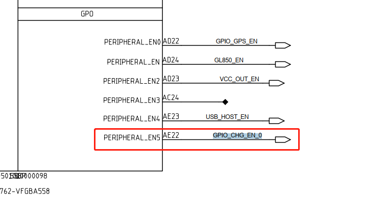
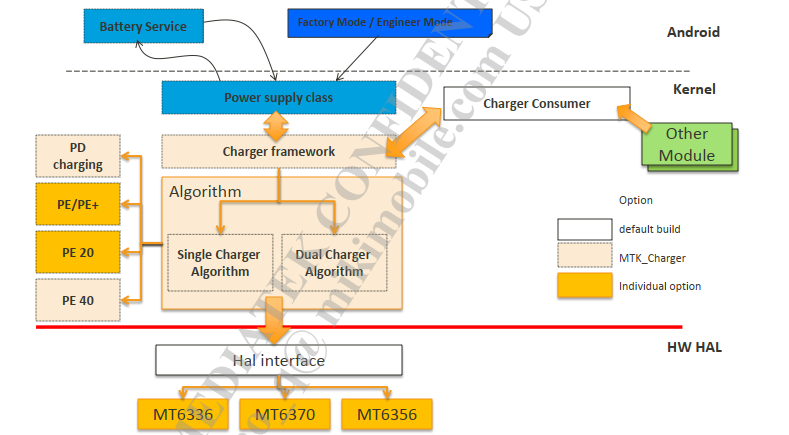
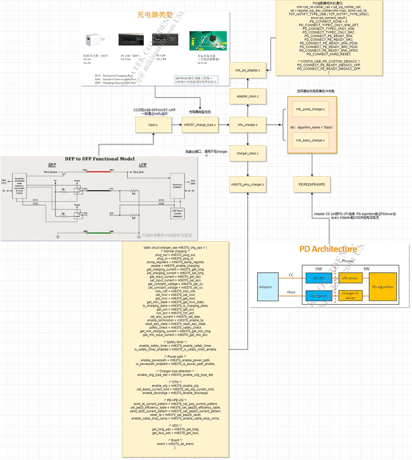
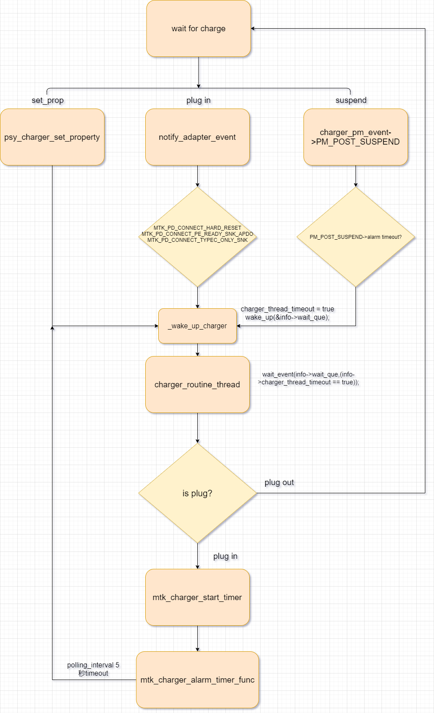
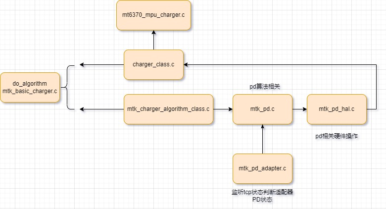
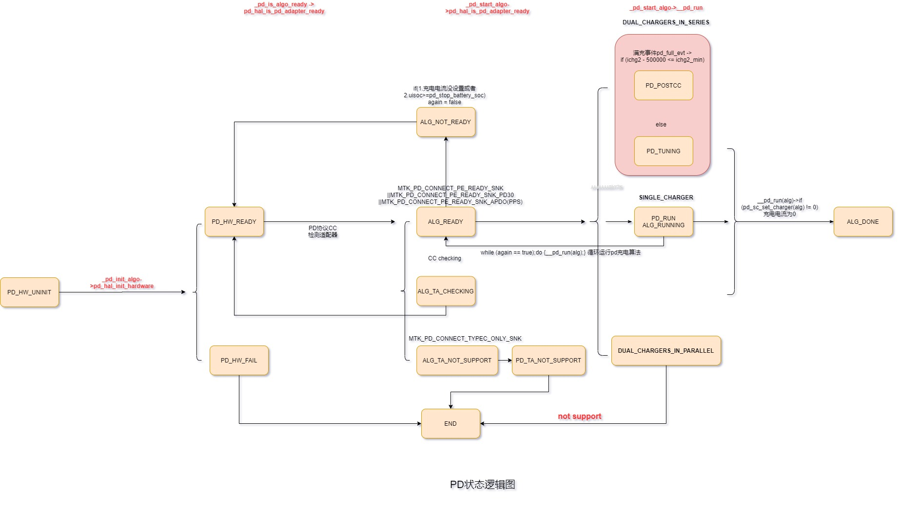
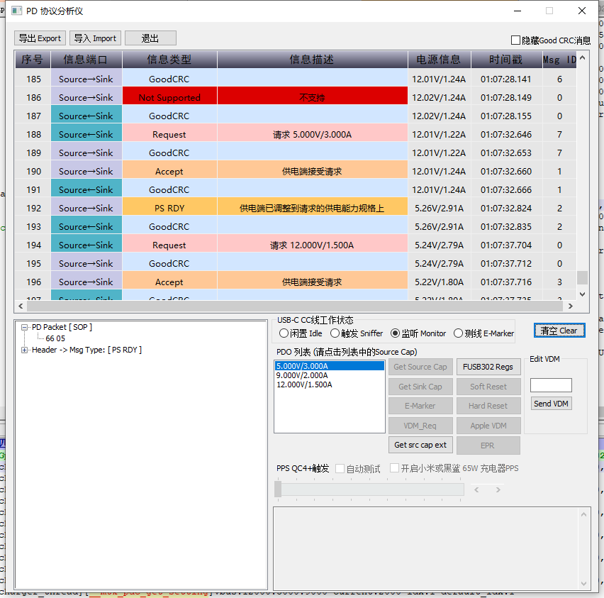

概述
讲述MTK平台充电流程
硬件
首先需要确定中断使能脚，不然无法充电：

软件配置：
--- a/kernel-4.19/drivers/misc/mediatek/dws/mt6765/k62v1_64_pax.dws
+++ b/kernel-4.19/drivers/misc/mediatek/dws/mt6765/k62v1_64_pax.dws
@@ -1,5 +1,5 @@
<?xml version="1.0" encoding="UTF-8"?>
-<!--dct_version="2.5" buid_sn="161102" dws_modification_time="03.13.2021.15:59:06"-->
+<!--dct_version="2.5" buid_sn="161102" dws_modification_time="04.20.2021.17:21:23"-->
<dct_cfg>
<general chip="MT6765">
<proj>MT6765</proj>
@@ -1696,8 +1696,8 @@
<inpull_en>false</inpull_en>
<inpull_selhigh>false</inpull_selhigh>
<def_dir>OUT</def_dir>
- <out_high>true</out_high>
- <varName0>GPIO_LCM_LED_EN</varName0>
+ <out_high>false</out_high>
+ <varName0>GPIO_SWCHARGER_EN_PIN</varName0>
<smt>false</smt>
<ies>true</ies>
</gpio154>
@@ -1917,7 +1917,6 @@
<inpull_selhigh>false</inpull_selhigh>
<def_dir>OUT</def_dir>
<out_high>false</out_high>
- <varName0>GPIO_SWCHARGER_EN_PIN</varName0>
<smt>false</smt>
<ies>true</ies>
</gpio175>
软件架构
整体架构

kernel架构

软件分析
dts配置
mt6765.dts:
charger: charger {
compatible = "mediatek,charger";
gauge = <&mtk_gauge>;
charger = <&mt6370_chg>;
bootmode = <&chosen>;
pmic = <&main_pmic>;
algorithm_name = "Basic"; //选择基础充电
charger_configuration= <0>;
/* common */
battery_cv = <4350000>;
max_charger_voltage = <6500000>;
min_charger_voltage = <4500000>;
/* sw jeita */
/* enable_sw_jeita; */
jeita_temp_above_t4_cv = <4240000>;
jeita_temp_t3_to_t4_cv = <4240000>;
jeita_temp_t2_to_t3_cv = <4340000>;
jeita_temp_t1_to_t2_cv = <4240000>;
jeita_temp_t0_to_t1_cv = <4040000>;
jeita_temp_below_t0_cv = <4040000>;
temp_t4_thres = <50>;
temp_t4_thres_minus_x_degree = <47>;
temp_t3_thres = <45>;
temp_t3_thres_minus_x_degree = <39>;
temp_t2_thres = <10>;
temp_t2_thres_plus_x_degree = <16>;
temp_t1_thres = <0>;
temp_t1_thres_plus_x_degree = <6>;
temp_t0_thres = <0>;
temp_t0_thres_plus_x_degree = <0>;
temp_neg_10_thres = <0>;
/* battery temperature protection */
enable_min_charge_temp;
min_charge_temp = <0>;
min_charge_temp_plus_x_degree = <6>;
max_charge_temp = <50>;
max_charge_temp_minus_x_degree = <47>;
/* charging current */
usb_charger_current = <500000>;
ac_charger_current = <2000000>;
ac_charger_input_current = <3000000>;
charging_host_charger_current = <1500000>;
/* dynamic mivr */
enable_dynamic_mivr;
min_charger_voltage_1 = <4400000>;
min_charger_voltage_2 = <4200000>;
max_dmivr_charger_current = <2500000>;
};
charger probe流程
1.charger probe工作
mtk_charger.c:
* mtk_charger_probe(struct platform_device *pdev)
* mtk_charger_parse_dt(info, &pdev->dev); //解析dts
* info->charger_wakelock = wakeup_source_register(NULL, name); //注册wakeup锁
* info->polling_interval = CHARGING_INTERVAL; //#define CHARGING_INTERVAL 5 timer间隔时间5s启动一次充电线程
* mtk_charger_init_timer(info);
* alarm_init(&info->charger_timer, ALARM_BOOTTIME,mtk_charger_alarm_timer_func);
* register_pm_notifier(&info->pm_notifier)//监听PM休眠唤醒事件
* info->pm_notifier.notifier_call = charger_pm_event; //监听PM休眠唤醒事件
* case PM_POST_SUSPEND: //休眠状态
* _wake_up_charger(info); //唤醒充电线程，检查是否有适配器插入在充电
* mtk_charger_setup_files(pdev); //创建各种sysfs
* info->psy_desc1.name = "mtk-master-charger"; //psy设备名称，节点：sys/class/power_supply/mtk-master-charger
* info->psy1 = power_supply_register(&pdev->dev, &info->psy_desc1,&info->psy_cfg1); //注册psy
* info->pd_nb.notifier_call = notify_adapter_event; //监听PD适配器充电事件，比如复位、PD30支持等
* bms_notify_register_client(&info->bms_nb); //注册bms监听,我们自己定制的
charger_routine_thread唤醒
charger_routine_thread该线程只在_wake_up_charger被调用后才执行,否则就会一直休眠等待。
while (1) {
wait_event(info->wait_que, (info->charger_thread_timeout == true));//此处进程休眠等待,充电器插入.
info->charger_thread_timeout = false; //跑一次线程，就会进入下次的wait_event
}
只有条件info->charger_thread_timeout为true时才被唤醒继续执行.
void _wake_up_charger(struct charger_manager *info)
{
unsigned long flags;
if (info == NULL)
return;
spin_lock_irqsave(&info->slock, flags);
if (wake_lock_active(&info->charger_wakelock) == 0)
wake_lock(&info->charger_wakelock);
spin_unlock_irqrestore(&info->slock, flags);
info->charger_thread_timeout = true; //重要
wake_up(&info->wait_que);//唤醒等待队列上休眠的进程
}
具体看看哪些地方调用了_wake_up_charger函数：
1.alarm timeout, wake up charger 休眠时会唤醒检查是否有适配器插入：
static int charger_pm_event(struct notifier_block *notifier,
unsigned long pm_event, void *unused)
{
···
case PM_POST_SUSPEND:
info->is_suspend = false;
chr_debug("%s: enter PM_POST_SUSPEND\n", __func__);
get_monotonic_boottime(&now);
if (timespec_compare(&now, &info->endtime) >= 0 &&
info->endtime.tv_sec != 0 &&
info->endtime.tv_nsec != 0) {
chr_err("%s: alarm timeout, wake up charger\n",
__func__);
__pm_relax(info->charger_wakelock);
info->endtime.tv_sec = 0;
info->endtime.tv_nsec = 0;
_wake_up_charger(info);
}
break;
default:
break;
···
}
2.被调用psy_charger_set_property时唤醒：
int psy_charger_set_property(struct power_supply *psy,
enum power_supply_property psp,
const union power_supply_propval *val)
{
switch (psp) {
case POWER_SUPPLY_PROP_VOLTAGE_MAX:
if (val->intval > 0)
info->enable_hv_charging = true;
else
info->enable_hv_charging = false;
break;
case POWER_SUPPLY_PROP_CONSTANT_CHARGE_CURRENT_MAX:
info->chg_data[idx].thermal_charging_current_limit =
val->intval;
break;
case POWER_SUPPLY_PROP_INPUT_CURRENT_LIMIT:
info->chg_data[idx].thermal_input_current_limit =
val->intval;
break;
default:
return -EINVAL;
}
_wake_up_charger(info);
return 0;
}
3.external_power_changed被调用时唤醒：
static void mtk_charger_external_power_changed(struct power_supply *psy)
{
struct mtk_charger *info;
union power_supply_propval prop, prop2;
struct power_supply *chg_psy = NULL;
int ret;
info = (struct mtk_charger *)power_supply_get_drvdata(psy);
chg_psy = devm_power_supply_get_by_phandle(&info->pdev->dev,
"charger");
if (IS_ERR_OR_NULL(chg_psy)) {
pr_notice("%s Couldn't get chg_psy\n", __func__);
} else {
ret = power_supply_get_property(chg_psy,
POWER_SUPPLY_PROP_ONLINE, &prop);
ret = power_supply_get_property(chg_psy,
POWER_SUPPLY_PROP_USB_TYPE, &prop2);
}
pr_notice("%s event, name:%s online:%d type:%d vbus:%d\n", __func__,
psy->desc->name, prop.intval, prop2.intval,
get_vbus(info));
mtk_is_charger_on(info);
_wake_up_charger(info);
}
4.作为SNK或者PD硬复位时唤醒：
int notify_adapter_event(struct notifier_block *notifier,
unsigned long evt, void *val)
{
switch (evt) {
···
case MTK_PD_CONNECT_HARD_RESET:
mutex_lock(&pinfo->pd_lock);
chr_err("PD Notify HardReset\n");
pinfo->pd_type = MTK_PD_CONNECT_NONE;
pinfo->pd_reset = true;
mutex_unlock(&pinfo->pd_lock);
_wake_up_charger(pinfo);
/* reset PE40 */
break;
···
case MTK_PD_CONNECT_PE_READY_SNK_APDO:
mutex_lock(&pinfo->pd_lock);
chr_err("PD Notify APDO Ready\n");
pinfo->pd_type = MTK_PD_CONNECT_PE_READY_SNK_APDO;
mutex_unlock(&pinfo->pd_lock);
/* PE40 is ready */
_wake_up_charger(pinfo);
break;
···
case MTK_PD_CONNECT_TYPEC_ONLY_SNK:
mutex_lock(&pinfo->pd_lock);
chr_err("PD Notify Type-C Ready\n");
pinfo->pd_type = MTK_PD_CONNECT_TYPEC_ONLY_SNK;
mutex_unlock(&pinfo->pd_lock);
/* type C is ready */
_wake_up_charger(pinfo);
break;
return NOTIFY_DONE;
}
timer初始化
timer初始化工作是在probe函数里处理的：
timer初始化函数：
static void mtk_charger_init_timer(struct mtk_charger *info)
{
alarm_init(&info->charger_timer, ALARM_BOOTTIME,
mtk_charger_alarm_timer_func);
mtk_charger_start_timer(info);
#ifdef CONFIG_PM
if (register_pm_notifier(&info->pm_notifier))
chr_err("%s: register pm failed\n", __func__);
#endif /* CONFIG_PM */
}
static void mtk_charger_start_timer(struct mtk_charger *info)
{
struct timespec time, time_now;
ktime_t ktime;
int ret = 0;
/* If the timer was already set, cancel it */
ret = alarm_try_to_cancel(&info->charger_timer);
if (ret < 0) {
chr_err("%s: callback was running, skip timer\n", __func__);
return;
}
get_monotonic_boottime(&time_now);
time.tv_sec = info->polling_interval;
time.tv_nsec = 0;
info->endtime = timespec_add(time_now, time);
ktime = ktime_set(info->endtime.tv_sec, info->endtime.tv_nsec);
chr_err("%s: alarm timer start:%d, %ld %ld\n", __func__, ret,
info->endtime.tv_sec, info->endtime.tv_nsec);
alarm_start(&info->charger_timer, ktime);
}
timer执行函数：
static enum alarmtimer_restart
mtk_charger_alarm_timer_func(struct alarm *alarm, ktime_t now)
{
struct mtk_charger *info =
container_of(alarm, struct mtk_charger, charger_timer);
if (info->is_suspend == false) { //非休眠状态
chr_err("%s: not suspend, wake up charger\n", __func__);
_wake_up_charger(info);
} else {
chr_err("%s: alarm timer timeout\n", __func__);
__pm_stay_awake(info->charger_wakelock);
}
return ALARMTIMER_NORESTART;
}
timer时间设置为time.tv_sec = info->polling_interval;，跟到代码info->polling_interval = CHARGING_INTERVAL，timer每5s唤醒一次充电线程。
timer使能与关闭
timer是在线程唤醒后，根据变量charger_thread_polling为真才会执行的，而charger_thread_polling是在usb插入和拔出时赋值的，插入使能，拔出关闭。
charger_routine_thread()
{
if (info->charger_thread_polling == true)
mtk_charger_start_timer(info);
}
static int mtk_charger_plug_in(struct mtk_charger *info,
int chr_type)
{
info->charger_thread_polling = true;
info->can_charging = true;
}
static int mtk_charger_plug_out(struct mtk_charger *info)
{
info->charger_thread_polling = false;
}
charger_routine_thread和timer关系流程如下：

charger_routine_thread线程流程
1.charger线程chg_alg_init_algo(PD充电判断)
根据is_charger_on可以知道当适识别到bc.12检测USB后，才调用充电算法do_algorithm。
* kthread_run(charger_routine_thread, info, "charger_thread"); //创建充电线程
* if (charger_init_algo(info) == true) //检测是否软件打开支持PD/PE或者普通充电，这里并没有发生协议，并注册相关notify
* chr_err("get pd success\n");
* chg_alg_init_algo(alg);
* lg_dev->ops->init_algo(alg_dev);
* _pd_init_algo(struct chg_alg_device *alg)
* if (pd_hal_init_hardware(alg) != 0)
* hal->chg1_dev = get_charger_by_name("primary_chg");
* hal->adapter = get_adapter_by_name("pd_adapter");
* pd->state = PD_HW_FAIL/PD_HW_READY; //重要，PD充电第一步
* alg->config = SINGLE_CHARGER/DUAL_CHARGERS_IN_SERIES/DUAL_CHARGERS_IN_PARALLEL //判断是否支持单充、串行双充、并行双充
* register_chg_alg_notifier(alg, &info->chg_alg_nb); //比如支持PD
* info->chg1_nb.notifier_call = info->algo.do_event; //关联basic charger驱动的do_event函数，主要识别回充、ovp、SAFETY_TIMEOUT充电安全时间等事件接受，接收到notify后会唤醒充电线程
* register_charger_device_notifier(info->chg1_dev,&info->chg1_nb);
* charger_dev_event(struct notifier_block *nb, unsigned long event,
* case CHARGER_DEV_NOTIFY_RECHG:
* _wake_up_charger(info); //回充会唤醒充电线程
* is_charger_on = mtk_is_charger_on(info); //重要，关系到bc1.2检测识别是否在充电
* chr_type = get_charger_type(info);//bc1.2 检测充电器流程请看0003_Android11充电类型识别.md
* if (chr_type == POWER_SUPPLY_TYPE_UNKNOWN)
* if (info->chr_type != POWER_SUPPLY_TYPE_UNKNOWN) {
* mtk_charger_plug_out(info);//如果当前是UNKNOWN设备，上次检测不是UNKNOWN设备，则识别成拔出usb，断开充电
* else if (info->chr_type == POWER_SUPPLY_TYPE_UNKNOWN)
* mtk_charger_plug_in(info, chr_type);//如果是从UNKNOWN设备->变为非UNKNOWN设备，则插入usb
* info->can_charging = true; //重要，这里线程才会开始运行充电算法
* chg_alg_notifier_call(alg, ¬ify); //通知驱动usb插入
* charger_dev_plug_in(info->chg1_dev);
* chg_dev->ops->plug_in(chg_dev);
* mt6370_plug_in(struct charger_device *chg_dev)
* ret = mt6370_enable_charging(chg_dev, true); //使能充电
* check_battery_exist(info); //检测电池是否存在
* check_dynamic_mivr(info); //设置动态mivr，主要是AICL功能
* #ifndef CONFIG_PAX_BMS charger_check_status(info);//这里本来是检测电池温度的，现在放到BMS里面做，mtk jeita也在里面，这样就没开
* kpoc_power_off_check(info); //关机充电，拔出USB则关闭系统
* if (is_disable_charger(info) == false && is_charger_on == true && info->can_charging == true) //详情如上mtk_is_charger_on，如果检测到插入充电器了，且正在充电，则调用充电算法。
* info->algo.do_algorithm(info); //调用mtk_basic_charger.c
* is_basic = select_charging_current_limit(info, &info->setting); //选择充电限流电流
* else is_disable_charger(info), //停止充电
大概流程如下：
开机解析dts
监听PD适配器充电事件，比如复位、PD30支持等，功能比如PD硬复位时会调用_wake_up_charger唤醒充电线程，注册bms监听。
关联basic charger驱动的do_event函数，主要识别回充、ovp、SAFETY_TIMEOUT充电安全时间等事件接受，接收到notify后会唤醒充电线程。
pd_hal_init_hardware解析dts是否支持PD、单充或双充，PD_HW_READY。
bc1.2检测识别是否可充电，如果是从UNKNOWN设备->变为非UNKNOWN设备，则插入usb使能充电。
检测电池是否存在
设置动态mivr，主要是AICL功能
如果检测到插入充电器了，且正在充电，则调用充电算法do_algorithm。
select_charging_current_limit选择充电限流电流。
pys相关属性：
mtk_charger注册的psy属性：
static enum power_supply_property charger_psy_properties[] = {
POWER_SUPPLY_PROP_ONLINE,
POWER_SUPPLY_PROP_PRESENT,
POWER_SUPPLY_PROP_VOLTAGE_MAX,
POWER_SUPPLY_PROP_VOLTAGE_NOW,
POWER_SUPPLY_PROP_TEMP,
POWER_SUPPLY_PROP_CONSTANT_CHARGE_CURRENT_MAX,
POWER_SUPPLY_PROP_INPUT_CURRENT_LIMIT,
};
PAYTABLETM8:/sys/class/power_supply # ls mtk-master-charger
constant_charge_current_max online subsystem uevent wakeup130
device power temp voltage_max
input_current_limit present type voltage_now
psy属性实现：
int psy_charger_set_property(struct power_supply *psy,
enum power_supply_property psp,
const union power_supply_propval *val)
{
struct mtk_charger *info;
int idx;
chr_err("%s: prop:%d %d\n", __func__, psp, val->intval);
info = (struct mtk_charger *)power_supply_get_drvdata(psy);
if (info->psy1 != NULL &&
info->psy1 == psy)
idx = CHG1_SETTING;
else if (info->psy2 != NULL &&
info->psy2 == psy)
idx = CHG2_SETTING;
else {
chr_err("%s fail\n", __func__);
return 0;
}
switch (psp) {
case POWER_SUPPLY_PROP_VOLTAGE_MAX:
if (val->intval > 0)
info->enable_hv_charging = true;
else
info->enable_hv_charging = false;
break;
case POWER_SUPPLY_PROP_CONSTANT_CHARGE_CURRENT_MAX:
info->chg_data[idx].thermal_charging_current_limit =
val->intval;
break;
case POWER_SUPPLY_PROP_INPUT_CURRENT_LIMIT:
info->chg_data[idx].thermal_input_current_limit =
val->intval;
break;
default:
return -EINVAL;
}
_wake_up_charger(info);
return 0;
}
static int psy_charger_get_property(struct power_supply *psy,
enum power_supply_property psp, union power_supply_propval *val)
{
struct mtk_charger *info;
struct charger_device *chg;
info = (struct mtk_charger *)power_supply_get_drvdata(psy);
chr_err("%s psp:%d\n",
__func__, psp);
if (info->psy1 != NULL &&
info->psy1 == psy)
chg = info->chg1_dev;
else if (info->psy2 != NULL &&
info->psy2 == psy)
chg = info->chg2_dev;
else {
chr_err("%s fail\n", __func__);
return 0;
}
switch (psp) {
case POWER_SUPPLY_PROP_ONLINE:
val->intval = is_charger_exist(info);
break;
case POWER_SUPPLY_PROP_PRESENT:
if (chg != NULL)
val->intval = true;
else
val->intval = false;
break;
case POWER_SUPPLY_PROP_VOLTAGE_MAX:
val->intval = info->enable_hv_charging;
break;
case POWER_SUPPLY_PROP_VOLTAGE_NOW:
val->intval = get_vbus(info);
break;
case POWER_SUPPLY_PROP_TEMP:
if (chg == info->chg1_dev)
val->intval =
info->chg_data[CHG1_SETTING].junction_temp_max;
else if (chg == info->chg2_dev)
val->intval =
info->chg_data[CHG2_SETTING].junction_temp_max;
else
val->intval = -127;
break;
case POWER_SUPPLY_PROP_CONSTANT_CHARGE_CURRENT_MAX:
val->intval = get_charger_charging_current(info, chg);
break;
case POWER_SUPPLY_PROP_INPUT_CURRENT_LIMIT:
val->intval = get_charger_input_current(info, chg);
break;
case POWER_SUPPLY_PROP_USB_TYPE:
val->intval = info->chr_type;
break;
case POWER_SUPPLY_PROP_VOLTAGE_BOOT:
val->intval = get_charger_zcv(info, chg);
break;
default:
return -EINVAL;
}
return 0;
}
2.do_algorithm算法(判断PD协议是否准备好PD充电)
根据dts内容algorithm_name = "Basic";，得知选择的是基础充电，以下都已支持PD充电为例子做介绍。
* do_algorithm(struct mtk_charger *info)
* charger_dev_is_charging_done(info->chg1_dev, &chg_done);
* mt6370_is_charging_done(struct charger_device *chg_dev, bool *done)
* if (chg_done)
* charger_dev_do_event(info->chg1_dev, EVENT_FULL, 0);
* is_basic = select_charging_current_limit(info, &info->setting); //重要，1.根据bc1.2/CC Rp/thermal设置限流，判断是否支持快充。
* if (is_basic != true) //快充
* chg_alg_notifier_call(alg, ¬ify); //通知满充及回充状态
* chg_alg_set_current_limit(alg, &info->setting);
* alg_dev->ops->set_current_limit(alg_dev, setting);
* _pd_set_setting(struct chg_alg_device *alg_dev, //例如PD充电
* pd->input_current_limit1 = setting->input_current_limit1; //限制电池端电流
* pd->charging_current_limit1 = setting->charging_current_limit1; //限制适配器电流
* ret = chg_alg_is_algo_ready(alg); //判断快充是否已准备好
* alg_dev->ops->is_algo_ready(alg_dev);
* _pd_is_algo_ready(struct chg_alg_device *alg) //mtk_pd.c
* case PD_HW_READY: ret_value = pd_hal_is_pd_adapter_ready(alg);
* if (type == MTK_PD_CONNECT_PE_READY_SNK ||type == MTK_PD_CONNECT_PE_READY_SNK_PD30 ||type == MTK_PD_CONNECT_PE_READY_SNK_APDO) //如果CC检测到是这几种情况表示支持PD充电
* if (ret == ALG_READY || ret == ALG_RUNNING) {is_basic = false;chg_alg_start_algo(alg); break; //开始PD充电
* _pd_start_algo(struct chg_alg_device *alg)
* case PD_RUN: ret_value = __pd_run(alg); //do while架构pd充电
* else //普通充电
* if (val > 5000 && chg_alg_is_algo_running(alg))
* chg_alg_stop_algo(alg); //如果快充时vbus大于5v，则停止pd充电。
* charger_dev_set_input_current(info->chg1_dev,pdata->input_current_limit); //设置普充电池端电流
* charger_dev_set_charging_current(info->chg1_dev,pdata->charging_current_limit); //设置普充适配器电流
* charger_dev_set_constant_voltage(info->chg1_dev,info->setting.cv); //设置cv，一般设置为4.35v
* charger_dev_dump_registers(info->chg1_dev);
* mt6370_dump_register(struct charger_device *chg_dev) //打印各种充电信息
大概流程如下：
1.根据bc1.2/CC Rp/thermal设置限流，判断是否支持快充。
2.上报满充及回充状态。
3.如果支持快充，判断PD协议是否完成，快充CC是否已准备好，开始执行快充算法。
4.如果是普通充电，则设置电流、电压。
5.打印各种充电信息：
<6>[ 334.128108] (2)[303:charger_thread]mt6370_pmu_charger mt6370_pmu_charger: mt6370_dump_register: ICHG = 2000mA, AICR = 750mA, MIVR = 4400mV, IEOC = 250mA, CV = 4370mV
<6>[ 334.128136] (2)[303:charger_thread]mt6370_pmu_charger mt6370_pmu_charger: mt6370_dump_register: VSYS = 4130mV, VBAT = 4110mV, IBAT = 300mA, IBUS = 700mA, VBUS = 4425mV
<6>[ 334.128143] (2)[303:charger_thread]mt6370_pmu_charger mt6370_pmu_charger: mt6370_dump_register: CHG_EN = 1, CHG_STATUS = progress, CHG_STAT = 0xA0
<6>[ 334.128150] (2)[303:charger_thread]mt6370_pmu_charger mt6370_pmu_charger: mt6370_dump_register: CHG_CTRL1 = 0x10, CHG_CTRL2 = 0x1B
3.select_charging_current_limit解析
select_charging_current_limit函数主要功能是根据bc1.2/CC Rp/thermal设置限流，判断是否支持快充，下面来详细看一下具体处理流程：
dts：
charger: charger {
/* battery temperature protection */
enable_min_charge_temp;
min_charge_temp = <0>;
min_charge_temp_plus_x_degree = <6>;
max_charge_temp = <50>;
max_charge_temp_minus_x_degree = <47>;
/* charging current */
usb_charger_current = <500000>;
ac_charger_current = <2000000>;
ac_charger_input_current = <3000000>;
charging_host_charger_current = <1500000>;
/* dynamic mivr */
enable_dynamic_mivr;
min_charger_voltage_1 = <4400000>;
min_charger_voltage_2 = <4200000>;
max_dmivr_charger_current = <2500000>;
}
static bool select_charging_current_limit(struct mtk_charger *info,
struct chg_limit_setting *setting)
{
struct charger_data *pdata, *pdata2;
bool is_basic = false;
u32 ichg1_min = 0, aicr1_min = 0;
int ret;
select_cv(info);
pdata = &info->chg_data[CHG1_SETTING];
pdata2 = &info->chg_data[CHG2_SETTING];
if (info->usb_unlimited) {
pdata->input_current_limit =
info->data.ac_charger_input_current;
pdata->charging_current_limit =
info->data.ac_charger_current;
is_basic = true;
goto done;
}
if (info->water_detected) {
pdata->input_current_limit = info->data.usb_charger_current;
pdata->charging_current_limit = info->data.usb_charger_current;
is_basic = true;
goto done;
}
if ((info->bootmode == 1) ||
(info->bootmode == 5)) {
pdata->input_current_limit = 200000; /* 200mA */ //meta模式限流
is_basic = true;
goto done;
}
if (info->atm_enabled == true
&& (info->chr_type == POWER_SUPPLY_TYPE_USB ||
info->chr_type == POWER_SUPPLY_TYPE_USB_CDP)
) {
pdata->input_current_limit = 100000; /* 100mA */
is_basic = true;
goto done;
}
if (info->chr_type == POWER_SUPPLY_TYPE_USB) {
pdata->input_current_limit =
info->data.usb_charger_current; //bc1.2检测，sdp适配器充电限流500ma
/* it can be larger */
pdata->charging_current_limit =
info->data.usb_charger_current;
is_basic = true;
} else if (info->chr_type == POWER_SUPPLY_TYPE_USB_CDP) {
pdata->input_current_limit =
info->data.charging_host_charger_current; //cdp适配器限流1.5a
pdata->charging_current_limit =
info->data.charging_host_charger_current;
is_basic = true;
} else if (info->chr_type == POWER_SUPPLY_TYPE_USB_DCP) {
pdata->input_current_limit =
info->data.ac_charger_input_current; // dcp适配器限流3a
pdata->charging_current_limit =
info->data.ac_charger_current; //电池端限流2a
if (info->config == DUAL_CHARGERS_IN_SERIES) {
pdata2->input_current_limit =
pdata->input_current_limit;
pdata2->charging_current_limit = 2000000;
}
} else if (info->chr_type == POWER_SUPPLY_TYPE_USB_FLOAT) {
/* NONSTANDARD_CHARGER */
//[BUGFIX]-BEGIN by wugangnan@paxsz.com 2021-12-11, float charger's current is limit as 2A for M50 leather case charging
pdata->input_current_limit = 2000000; //浮充适配器限流2a
//info->data.usb_charger_current;
pdata->charging_current_limit = 2000000;
//info->data.usb_charger_current;
//[BUGFIX]-END by wugangnan@paxsz.com 2021-12-11, float charger's current is limit as 2A for M50 leather case charging
is_basic = true;
}
if (support_fast_charging(info))
is_basic = false;
else {
is_basic = true;
/* AICL */
charger_dev_run_aicl(info->chg1_dev,
&pdata->input_current_limit_by_aicl);
if (info->enable_dynamic_mivr) {
if (pdata->input_current_limit_by_aicl >
info->data.max_dmivr_charger_current)
pdata->input_current_limit_by_aicl =
info->data.max_dmivr_charger_current;
}
if (is_typec_adapter(info)) { //type-c供电能力判断，根据DFP的上拉电阻Rp
if (adapter_dev_get_property(info->pd_adapter, TYPEC_RP_LEVEL)
== 3000) {
pdata->input_current_limit = 3000000;
pdata->charging_current_limit = 3000000;
} else if (adapter_dev_get_property(info->pd_adapter,
TYPEC_RP_LEVEL) == 1500) {
pdata->input_current_limit = 1500000;
pdata->charging_current_limit = 2000000;
} else {
chr_err("type-C: inquire rp error\n");
/* Add-BEGIN by (zhangwj@paxsz.com), 2021/04/29, for non-standard usb chg cable limit in 2.0A */
//pdata->input_current_limit = 500000;
//pdata->charging_current_limit = 500000;
pdata->input_current_limit = 2000000;
pdata->charging_current_limit = 2000000;
/* Add-END by (zhangwj@paxsz.com), 2021/04/29, for non-standard usb chg cable limit in 2.0A */
}
chr_err("type-C:%d current:%d\n",
info->pd_type,
adapter_dev_get_property(info->pd_adapter,
TYPEC_RP_LEVEL));
}
}
if (info->enable_sw_jeita) {
if (IS_ENABLED(CONFIG_USBIF_COMPLIANCE)
&& info->chr_type == POWER_SUPPLY_TYPE_USB)
chr_debug("USBIF & STAND_HOST skip current check\n");
else {
if (info->sw_jeita.sm == TEMP_T0_TO_T1) {
pdata->input_current_limit = 500000;
pdata->charging_current_limit = 350000;
}
}
}
if (pdata->thermal_charging_current_limit != -1) { //thermal限流
if (pdata->thermal_charging_current_limit <
pdata->charging_current_limit) {
pdata->charging_current_limit =
pdata->thermal_charging_current_limit;
info->setting.charging_current_limit1 =
pdata->thermal_charging_current_limit;
}
} else
info->setting.charging_current_limit1 = -1;
if (pdata->thermal_input_current_limit != -1) {
if (pdata->thermal_input_current_limit <
pdata->input_current_limit) {
pdata->input_current_limit =
pdata->thermal_input_current_limit;
info->setting.input_current_limit1 =
pdata->input_current_limit;
}
} else
info->setting.input_current_limit1 = -1;
if (pdata2->thermal_charging_current_limit != -1) {
if (pdata2->thermal_charging_current_limit <
pdata2->charging_current_limit) {
pdata2->charging_current_limit =
pdata2->thermal_charging_current_limit;
info->setting.charging_current_limit2 =
pdata2->charging_current_limit;
}
} else
info->setting.charging_current_limit2 = -1;
if (pdata2->thermal_input_current_limit != -1) {
if (pdata2->thermal_input_current_limit <
pdata2->input_current_limit) {
pdata2->input_current_limit =
pdata2->thermal_input_current_limit;
info->setting.input_current_limit2 =
pdata2->input_current_limit;
}
} else
info->setting.input_current_limit2 = -1;
if (is_basic == true && pdata->input_current_limit_by_aicl != -1) {
if (pdata->input_current_limit_by_aicl <
pdata->input_current_limit)
pdata->input_current_limit =
pdata->input_current_limit_by_aicl;
}
done:
ret = charger_dev_get_min_charging_current(info->chg1_dev, &ichg1_min);
if (ret != -ENOTSUPP && pdata->charging_current_limit < ichg1_min) {
pdata->charging_current_limit = 0;
chr_err("min_charging_current is too low %d %d\n",
pdata->charging_current_limit, ichg1_min);
is_basic = true;
info->enable_hv_charging = false;
}
ret = charger_dev_get_min_input_current(info->chg1_dev, &aicr1_min);
if (ret != -ENOTSUPP && pdata->input_current_limit < aicr1_min) {
pdata->input_current_limit = 0;
chr_err("min_input_current is too low %d %d\n",
pdata->input_current_limit, aicr1_min);
is_basic = true;
info->enable_hv_charging = false;
}
chr_err("m:%d chg1:%d,%d,%d,%d chg2:%d,%d,%d,%d type:%d:%d usb_unlimited:%d usbif:%d usbsm:%d aicl:%d atm:%d bm:%d b:%d\n",
info->config,
_uA_to_mA(pdata->thermal_input_current_limit),
_uA_to_mA(pdata->thermal_charging_current_limit),
_uA_to_mA(pdata->input_current_limit),
_uA_to_mA(pdata->charging_current_limit),
_uA_to_mA(pdata2->thermal_input_current_limit),
_uA_to_mA(pdata2->thermal_charging_current_limit),
_uA_to_mA(pdata2->input_current_limit),
_uA_to_mA(pdata2->charging_current_limit),
info->chr_type, info->pd_type,
info->usb_unlimited,
IS_ENABLED(CONFIG_USBIF_COMPLIANCE), info->usb_state,
pdata->input_current_limit_by_aicl, info->atm_enabled,
info->bootmode, is_basic);
return is_basic;
}
4.support_fast_charging判断是否支持PD充电(PD_HW_READY->PD_RUN)
该函数是轮询一遍pd/pe算法的is_algo_ready，判断是否支持快充，主要原理是mtk_pd_adapter驱动监听tcp notify，相当于PD协议，如果CC检测到是这几种情况表示支持PD充电，MTK_PD_CONNECT_PE_READY_SNK/MTK_PD_CONNECT_PE_READY_SNK_PD30/MTK_PD_CONNECT_PE_READY_SNK_APDO，具体看一下：
mtk_basic_charger.c
static bool support_fast_charging(struct mtk_charger *info)
{
struct chg_alg_device *alg;
int i = 0, state = 0;
bool ret = false;
for (i = 0; i < MAX_ALG_NO; i++) {
alg = info->alg[i];
if (alg == NULL)
continue;
chg_alg_set_current_limit(alg, &info->setting);
* _pd_set_setting(struct chg_alg_device *alg_dev,
* pd->cv = setting->cv;
* pd->input_current_limit1 = setting->input_current_limit1;
* pd->charging_current_limit1 = setting->charging_current_limit1;//设置cv/适配器、电池端电流限制
state = chg_alg_is_algo_ready(alg);
* alg_dev->ops->is_algo_ready(alg_dev);
chr_debug("%s %s ret:%s\n", __func__, dev_name(&alg->dev),
chg_alg_state_to_str(state));
if (state == ALG_READY || state == ALG_RUNNING) {
ret = true;
break;
}
}
return ret;
}
mtk_pd.c:
static int _pd_is_algo_ready(struct chg_alg_device *alg)
{
struct mtk_pd *pd = dev_get_drvdata(&alg->dev);
int ret_value;
int uisoc;
pd_err("%s %d\n", __func__, pd->state);
switch (pd->state) {
case PD_HW_UNINIT:
case PD_HW_FAIL:
ret_value = ALG_INIT_FAIL;
break;
case PD_HW_READY:
ret_value = pd_hal_is_pd_adapter_ready(alg);
if (ret_value == ALG_READY) {
uisoc = pd_hal_get_uisoc(alg);
if (pd->input_current_limit1 != -1 ||
pd->charging_current_limit1 != -1 ||
pd->input_current_limit2 != -1 ||
pd->charging_current_limit2 != -1 ||
uisoc >= pd->pd_stop_battery_soc) //如果限流都没设置好，或soc电量大于停充电量，表示pd不支持了。
ret_value = ALG_NOT_READY;
} else if (ret_value == ALG_TA_NOT_SUPPORT)
pd->state = PD_TA_NOT_SUPPORT;
else if (ret_value == ALG_TA_CHECKING)
pd->state = PD_HW_READY;
else
pd->state = PD_TA_NOT_SUPPORT;
break;
case PD_TA_NOT_SUPPORT:
ret_value = ALG_TA_NOT_SUPPORT;
break;
case PD_RUN:
case PD_TUNING:
case PD_POSTCC:
ret_value = ALG_RUNNING;
break;
default:
pd_err("PD unknown state:%d\n", pd->state);
ret_value = ALG_INIT_FAIL;
break;
}
return ret_value;
}
mtk_pd_hal.c:
int pd_hal_is_pd_adapter_ready(struct chg_alg_device *alg)
{
struct mtk_pd *pd;
struct pd_hal *hal;
int type;
if (alg == NULL) {
pr_notice("%s: alg is null\n", __func__);
return -EINVAL;
}
pd = dev_get_drvdata(&alg->dev);
hal = chg_alg_dev_get_drv_hal_data(alg);
type = adapter_dev_get_property(hal->adapter, PD_TYPE);
pr_notice("%s type:%d\n", __func__, type);
if (type == MTK_PD_CONNECT_PE_READY_SNK ||
type == MTK_PD_CONNECT_PE_READY_SNK_PD30 ||
type == MTK_PD_CONNECT_PE_READY_SNK_APDO) //重点
return ALG_READY;
else if (type == MTK_PD_CONNECT_TYPEC_ONLY_SNK)
return ALG_TA_NOT_SUPPORT;
return ALG_TA_CHECKING;
}
可以看到pd_hal_is_pd_adapter_ready函数是获取适配器的PD_TYPE属性，那来看一下：
mtk_pd_adapter.c:
static int pd_get_property(struct adapter_device *dev,
enum adapter_property sta)
{
struct mtk_pd_adapter_info *info;
info = (struct mtk_pd_adapter_info *)adapter_dev_get_drvdata(dev);
if (info == NULL || info->tcpc == NULL)
return -1;
switch (sta) {
case TYPEC_RP_LEVEL:
{
return tcpm_inquire_typec_remote_rp_curr(info->tcpc);
}
break;
case PD_TYPE:
{
return info->pd_type; //重要
}
break;
default:
{
}
break;
}
return -1;
}
继续看一下info->pd_type赋值，可以看到pd_adapter驱动其实就支持监听typec的PD状态：
mtk_pd_adapter_probe(struct platform_device *pdev)
{
info->pd_nb.notifier_call = pd_tcp_notifier_call;
ret = register_tcp_dev_notifier(info->tcpc, &info->pd_nb,TCP_NOTIFY_TYPE_USB | TCP_NOTIFY_TYPE_MISC);
}
static int pd_tcp_notifier_call(struct notifier_block *pnb,
unsigned long event, void *data)
{
struct tcp_notify *noti = data;
struct mtk_pd_adapter_info *pinfo;
struct adapter_device *adapter;
int ret = 0;
pinfo = container_of(pnb, struct mtk_pd_adapter_info, pd_nb);
adapter = pinfo->adapter_dev;
pr_notice("PD charger event:%d %d\n", (int)event,
(int)noti->pd_state.connected);
switch (event) {
case TCP_NOTIFY_PD_STATE:
switch (noti->pd_state.connected) {
case PD_CONNECT_NONE:
pinfo->pd_type = MTK_PD_CONNECT_NONE;
ret = srcu_notifier_call_chain(&adapter->evt_nh,
MTK_PD_CONNECT_NONE, NULL);
// notify_adapter_event(MTK_PD_ADAPTER,
// MTK_PD_CONNECT_NONE, NULL);
break;
case PD_CONNECT_HARD_RESET:
pinfo->pd_type = MTK_PD_CONNECT_NONE;
ret = srcu_notifier_call_chain(&adapter->evt_nh,
MTK_PD_CONNECT_HARD_RESET, NULL);
// notify_adapter_event(MTK_PD_ADAPTER,
// MTK_PD_CONNECT_HARD_RESET, NULL);
break;
case PD_CONNECT_PE_READY_SNK:
pinfo->pd_type = MTK_PD_CONNECT_PE_READY_SNK;
ret = srcu_notifier_call_chain(&adapter->evt_nh,
MTK_PD_CONNECT_PE_READY_SNK, NULL);
// notify_adapter_event(MTK_PD_ADAPTER,
// MTK_PD_CONNECT_PE_READY_SNK, NULL);
break;
case PD_CONNECT_PE_READY_SNK_PD30:
pinfo->pd_type = MTK_PD_CONNECT_PE_READY_SNK_PD30;
ret = srcu_notifier_call_chain(&adapter->evt_nh,
MTK_PD_CONNECT_PE_READY_SNK_PD30, NULL);
// notify_adapter_event(MTK_PD_ADAPTER,
// MTK_PD_CONNECT_PE_READY_SNK_PD30, NULL);
break;
case PD_CONNECT_PE_READY_SNK_APDO:
pinfo->pd_type = MTK_PD_CONNECT_PE_READY_SNK_APDO;
ret = srcu_notifier_call_chain(&adapter->evt_nh,
MTK_PD_CONNECT_PE_READY_SNK_APDO, NULL);
// notify_adapter_event(MTK_PD_ADAPTER,
// MTK_PD_CONNECT_PE_READY_SNK_APDO, NULL);
break;
case PD_CONNECT_TYPEC_ONLY_SNK_DFT:
/* fall-through */
case PD_CONNECT_TYPEC_ONLY_SNK:
pinfo->pd_type = MTK_PD_CONNECT_TYPEC_ONLY_SNK;
ret = srcu_notifier_call_chain(&adapter->evt_nh,
MTK_PD_CONNECT_TYPEC_ONLY_SNK, NULL);
// notify_adapter_event(MTK_PD_ADAPTER,
// MTK_PD_CONNECT_PE_READY_SNK_APDO, NULL);
break;
};
break;
case TCP_NOTIFY_TYPEC_STATE:
/* handle No-rp and dual-rp cable */
if (noti->typec_state.old_state == TYPEC_UNATTACHED &&
(noti->typec_state.new_state == TYPEC_ATTACHED_CUSTOM_SRC ||
noti->typec_state.new_state == TYPEC_ATTACHED_NORP_SRC)) {
pinfo->pd_type = MTK_PD_CONNECT_TYPEC_ONLY_SNK;
ret = srcu_notifier_call_chain(&adapter->evt_nh,
MTK_PD_CONNECT_TYPEC_ONLY_SNK, NULL);
} else if ((noti->typec_state.old_state ==
TYPEC_ATTACHED_CUSTOM_SRC ||
noti->typec_state.old_state == TYPEC_ATTACHED_NORP_SRC)
&& noti->typec_state.new_state == TYPEC_UNATTACHED) {
pinfo->pd_type = MTK_PD_CONNECT_NONE;
ret = srcu_notifier_call_chain(&adapter->evt_nh,
MTK_PD_CONNECT_NONE, NULL);
}
break;
case TCP_NOTIFY_WD_STATUS:
ret = srcu_notifier_call_chain(&adapter->evt_nh,
MTK_TYPEC_WD_STATUS, ¬i->wd_status.water_detected);
break;
}
return ret;
}
5.chg_alg_start_algo开始PD充电
可以看到_pd_start_algo里面是do while循环架构，重复判断PD支持并执行PD充电算法。
* chg_alg_start_algo
static int _pd_start_algo(struct chg_alg_device *alg)
{
int ret_value = 0;
struct mtk_pd *pd = dev_get_drvdata(&alg->dev);
bool again = false;
int uisoc;
mutex_lock(&pd->access_lock);
do {
pd_info("%s state:%d %s %d\n", __func__,
pd->state,
pd_state_to_str(pd->state),
again);
again = false;
switch (pd->state) {
case PD_HW_UNINIT:
case PD_HW_FAIL:
ret_value = ALG_INIT_FAIL;
break;
case PD_HW_READY:
ret_value = pd_hal_is_pd_adapter_ready(alg);
if (ret_value == ALG_TA_NOT_SUPPORT)
pd->state = PD_TA_NOT_SUPPORT;
else if (ret_value == ALG_READY) {
uisoc = pd_hal_get_uisoc(alg);
if (pd->input_current_limit1 != -1 ||
pd->charging_current_limit1 != -1 ||
pd->input_current_limit2 != -1 ||
pd->charging_current_limit2 != -1 ||
uisoc >= pd->pd_stop_battery_soc)
ret_value = ALG_NOT_READY;
else {
pd->state = PD_RUN;
again = true;
}
}
break;
case PD_TA_NOT_SUPPORT:
ret_value = ALG_TA_NOT_SUPPORT;
break;
case PD_RUN:
case PD_TUNING:
case PD_POSTCC:
ret_value = __pd_run(alg);
break;
default:
pd_err("PD unknown state:%d\n", pd->state);
ret_value = ALG_INIT_FAIL;
break;
}
} while (again == true);
mutex_unlock(&pd->access_lock);
return ret_value;
}
PD充电程序流程
__pd_run具体流程
__pd_run是PD充电的核心，主要是两个函数，一个是__mtk_pdc_get_setting获取当前适配器档位、最大最小电压、匹配最大功率信息，一个是__mtk_pdc_setup根据获取的电压阈值和最大功率信息去匹配档位信息，分析如下：
static int __pd_run(struct chg_alg_device *alg)
{
struct mtk_pd *pd = dev_get_drvdata(&alg->dev);
int vbus, cur, idx, ret, ret_value = ALG_RUNNING;
ret = __mtk_pdc_get_setting(alg, &vbus, &cur, &idx);
if (ret != -1 && idx != -1) {
if ((pd->input_current_limit1 != -1 &&
pd->input_current_limit1 < cur * 1000) == false)
pd->input_current_limit1 = cur * 1000;
__mtk_pdc_setup(alg, idx);
} else {
pd->input_current_limit1 =
PD_FAIL_CURRENT;
pd->charging_current_limit1 =
PD_FAIL_CURRENT;
}
if (alg->config == DUAL_CHARGERS_IN_SERIES) {
if (pd_dcs_set_charger(alg) != 0) {
ret_value = ALG_DONE;
//goto out;
}
} else {
if (pd_sc_set_charger(alg) != 0) {
ret_value = ALG_DONE;
//goto out;
}
}
return ret_value;
}
dts配置
M8.dts:
&pdc {
/* single charger */
sc_input_current = <3000000>;
sc_charger_current = <4000000>;
pd_stop_battery_soc = <100>;
pd_vbus_upper_bound = <9000000>;
dcs_chg1_charger_current = <2000000>;
dcs_chg2_charger_current = <2000000>;
};
mt6765:
dts:
pdc: pdc {
compatible = "mediatek,charger,pd";
gauge = <&mtk_gauge>;
min_charger_voltage = <4600000>;
pd_vbus_low_bound = <5000000>;
pd_vbus_upper_bound = <5000000>;
vsys_watt = <5000000>;
ibus_err = <14>;
pd_stop_battery_soc = <80>;
/* single charger */
sc_input_current = <3200000>;
sc_charger_current = <3000000>;
/* dual charger in series */
dcs_input_current = <3200000>;
dcs_chg1_charger_current = <1500000>;
dcs_chg2_charger_current = <1500000>;
/* dual charger */
dual_polling_ieoc = <450000>;
slave_mivr_diff = <100000>;
};
mt6370_pd.dtsi:
{
mt6370_typec: type_c_port0 {
/* 0: dfp/ufp, 1: dfp, 2: ufp */
tcpc-dual,supported_modes = <0>;
mt-tcpc,name = "type_c_port0"; /* tcpc_device's name */
/* 0: SNK Only, 1: SRC Only, 2: DRP, 3: Try.SRC, 4: Try.SNK */
mt-tcpc,role_def = <4>;
mt-tcpc,rp_level = <0>; /* 0: Default, 1: 1.5, 2: 3.0 */
/* 0: Never, 1: Always, 2: EMarkOnly, 3: StartOnly */
mt-tcpc,vconn_supply = <1>;
mt6370pd,intr_gpio = <&pio 24 0x0>;
mt6370pd,intr_gpio_num = <24>;
pd-data {
pd,vid = <0x29cf>;
pd,pid = <0x5081>;
pd,source-cap-ext = <0x171129cf 0x00000000 0x00000102
0x00000000 0x00000000 0x02000000>;
pd,mfrs = "RichtekTCPC";
/*
* VSAFE5V = 0, MAX_POWER = 1, CUSTOM = 2,
* MAX_POWER_LV = 0x21, MAX_POWER_LVIC = 0x31
* MAX_POWER_HV = 0x41, MAX_POWER_HVIC = 0x51
*/
pd,charging_policy= <0x41>; //PD策略
/*
* Fixed 5V, 500 mA <0x00019032>
* Fixed 5V, 1A <0x00019064>
* Fixed 5V, 2A <0x000190c8>
* Fixed 5V, 3A <0x0001912c>
* Fixed 9V, 500 mA <0x0002d032>
* Fixed 9V, 1A <0x0002d064>
* Fixed 9V, 2A <0x0002d0c8>
* Fixed 9V, 3A <0x0002d12c>
* Variable 5-9V, 1A <0x8642d064>
* Variable 5-9V, 2A <0x8642d0c8>
* Variable 5-9V, 3A <0x8642d12c>
* PPS 3V~5.9V, 3A <0xC0761E3C>
***12v add by zhangwj@paxsz.com
* Fixed 12V, 2A <0x0003c0c8>
* Fixed 12V, 1.5A <0x0003c096>
* Fixed 12V, 1A <0x0003c064>
*/
pd,source-pdo-size = <1>; //档位数量
pd,source-pdo-data = <0x00019032>; //放电时的档位支持，当充电宝
pd,sink-pdo-size = <4>;
pd,sink-pdo-data = <0x000190c8 0x0002d0c8 0x0003c064 0x0003c096>; //SINK时，也就是充电时的档位支持
/*
* No DP, host + device
* pd,id-vdo-size = <3>;
* pd,id-vdo-data = <0xd10029cf 0x0 0x00010000>;
* With DP
* pd,id-vdo-size = <4>;
* pd,id-vdo-data = <0xed0029cf 0x0 0x00010000
0x11000001>;
*/
pd,id-vdo-size = <3>;
pd,id-vdo-data = <0xd10029cf 0x00000000 0x00010000>;
bat,nr = <1>;
pd,country_nr = <0>;
bat-info0 {
bat,vid = <0x29cf>;
bat,pid = <0x1711>;
bat,mfrs = "bat1";
bat,design_cap = <3000>;
};
//bat-info1 {
// bat,vid = <0x8abc>;
// bat,pid = <0x5234>;
// bat,mfrs = "bat2";
// bat,design_cap = <4000>;
//};
//country0 {
// pd,country_code = <0x5457>;
// pd,country_len = <2>; /* max len = 26 */
// pd,country_data = <0xff 0xff>;
//};
//country1 {
// pd,country_code = <0x5553>;
// pd,country_len = <3>; /* max len = 26 */
// pd,country_data = <0xf1 0xf2 0xf3>;
//};
};
dpm_caps {
local_dr_power;
local_dr_data;
//local_ext_power;
local_usb_comm;
//local_usb_suspend;
//local_high_cap;
//local_give_back;
local_no_suspend;
local_vconn_supply;
//attemp_discover_cable_dfp;
attemp_enter_dp_mode;
attemp_discover_cable;
attemp_discover_id;
/* 0: disable, 1: prefer_snk, 2: prefer_src */
pr_check = <0>;
//pr_reject_as_source;
//pr_reject_as_sink;
pr_check_gp_source;
//pr_check_gp_sink;
/* 0: disable, 1: prefer_ufp, 2: prefer_dfp */
dr_check = <0>;
//dr_reject_as_dfp;
//dr_reject_as_ufp;
};
};
};
PD策略介绍
根据dts，pd策略及档位配置主要为以下：
/*
* VSAFE5V = 0, MAX_POWER = 1, CUSTOM = 2,
* MAX_POWER_LV = 0x21, MAX_POWER_LVIC = 0x31
* MAX_POWER_HV = 0x41, MAX_POWER_HVIC = 0x51
*/
pd,charging_policy= <0x41>; //PD策略
/*
* Fixed 5V, 500 mA <0x00019032>
* Fixed 5V, 1A <0x00019064>
* Fixed 5V, 2A <0x000190c8>
* Fixed 5V, 3A <0x0001912c>
* Fixed 9V, 500 mA <0x0002d032>
* Fixed 9V, 1A <0x0002d064>
* Fixed 9V, 2A <0x0002d0c8>
* Fixed 9V, 3A <0x0002d12c>
* Variable 5-9V, 1A <0x8642d064>
* Variable 5-9V, 2A <0x8642d0c8>
* Variable 5-9V, 3A <0x8642d12c>
* PPS 3V~5.9V, 3A <0xC0761E3C>
***12v add by zhangwj@paxsz.com
* Fixed 12V, 2A <0x0003c0c8>
* Fixed 12V, 1.5A <0x0003c096>
* Fixed 12V, 1A <0x0003c064>
*/
pd,source-pdo-size = <1>; //档位数量
pd,source-pdo-data = <0x00019032>; //放电时的档位支持，当充电宝
pd,sink-pdo-size = <4>;
pd,sink-pdo-data = <0x000190c8 0x0002d0c8 0x0003c064 0x0003c096>; //SINK时，也就是充电时的档位支持
pd,charging_policy解释如下，以下是所有充电策略：
enum dpm_charging_policy {
/* VSafe5V only */
DPM_CHARGING_POLICY_VSAFE5V = 0,
/* Max Power */
DPM_CHARGING_POLICY_MAX_POWER = 1,
/* Custom defined Policy */
DPM_CHARGING_POLICY_CUSTOM = 2,
/* Runtime Policy, restore to default after plug-out or hard-reset */
DPM_CHARGING_POLICY_RUNTIME = 3,
/* Direct charge <Variable PDO only> */
DPM_CHARGING_POLICY_DIRECT_CHARGE = 3,
/* PPS <Augmented PDO only> */
DPM_CHARGING_POLICY_PPS = 4,
/* Default Charging Policy <from DTS>*/
DPM_CHARGING_POLICY_DEFAULT = 0xff,
DPM_CHARGING_POLICY_IGNORE_MISMATCH_CURR = 1 << 4,
DPM_CHARGING_POLICY_PREFER_LOW_VOLTAGE = 1 << 5,
DPM_CHARGING_POLICY_PREFER_HIGH_VOLTAGE = 1 << 6,
DPM_CHARGING_POLICY_MAX_POWER_LV = //选最大功率，低电压
DPM_CHARGING_POLICY_MAX_POWER |
DPM_CHARGING_POLICY_PREFER_LOW_VOLTAGE,
DPM_CHARGING_POLICY_MAX_POWER_LVIC = //选最大功率，低电压，忽略不匹配的电流
DPM_CHARGING_POLICY_MAX_POWER_LV |
DPM_CHARGING_POLICY_IGNORE_MISMATCH_CURR,
DPM_CHARGING_POLICY_MAX_POWER_HV = //选最大功率，高电压
DPM_CHARGING_POLICY_MAX_POWER |
DPM_CHARGING_POLICY_PREFER_HIGH_VOLTAGE,
DPM_CHARGING_POLICY_MAX_POWER_HVIC = //选最大功率，高电压，忽略不匹配的电流
DPM_CHARGING_POLICY_MAX_POWER_HV |
DPM_CHARGING_POLICY_IGNORE_MISMATCH_CURR,
/* DPM_CHARGING_POLICY_PPS */
DPM_CHARGING_POLICY_PPS_IC =
DPM_CHARGING_POLICY_PPS |
DPM_CHARGING_POLICY_IGNORE_MISMATCH_CURR,
};
__mtk_pdc_get_setting函数
int __mtk_pdc_get_setting(struct chg_alg_device *alg, int *newvbus, int *newcur,
int *newidx)
{
int ret = 0;
int idx, selected_idx;
unsigned int pd_max_watt, pd_min_watt, now_max_watt;
struct mtk_pd *pd = dev_get_drvdata(&alg->dev);
int ibus = 0, vbus;
int chg2_watt = 0;
bool boost = false, buck = false;
struct pd_power_cap *cap;
unsigned int mivr1 = 0;
unsigned int mivr2 = 0;
bool chg1_mivr = false;
bool chg2_mivr = false;
int chg_cnt, i, is_chip_enabled;
//FEATURE-BEGIN by shanliangliang@paxsz.com, 2021/07/22
int uisoc;
//FEATURE-END by shanliangliang@paxsz.com, 2021/07/22
__mtk_pdc_init_table(alg);
__mtk_pdc_get_reset_idx(alg);
__mtk_pdc_get_cap_max_watt(alg);
cap = &pd->cap;
if (cap->nr == 0)
return -1;
打印：
05-27 14:28:04.062287 <6>[10054.723373] (6)[304:charger_thread]mt6370_pmu_charger mt6370_pmu_charger: mt6370_get_ibus: ibus = 1850mA
05-27 14:28:04.062625 <5>[10054.723711] (6)[304:charger_thread]psy_chr_type_get_property: prop:12
05-27 14:28:04.062961 <5>[10054.724047] (6)[304:charger_thread]get_pmic_vbus vbus:4598
ret = pd_hal_get_ibus(alg, &ibus);
if (ret < 0) {
pd_err("[%s] get ibus fail, keep default voltage\n", __func__);
return -1;
}
#ifdef FIXME //不跑
if (info->data.parallel_vbus) {
ret = charger_dev_get_ibat(info->chg1_dev, &chg1_ibat);
if (ret < 0)
pd_err("[%s] get ibat fail\n", __func__);
ret = charger_dev_get_ibat(info->chg2_dev, &chg2_ibat);
if (ret < 0) {
ibat = battery_get_bat_current();
chg2_ibat = ibat * 100 - chg1_ibat;
}
if (ibat < 0 || chg2_ibat < 0)
chg2_watt = 0;
else
chg2_watt = chg2_ibat / 1000 * battery_get_bat_voltage()
/ info->data.chg2_eff * 100;
pd_err("[%s] chg2_watt:%d ibat2:%d ibat1:%d ibat:%d\n",
__func__, chg2_watt, chg2_ibat, chg1_ibat, ibat * 100);
}
#endif
pd_hal_get_mivr_state(alg, CHG1, &chg1_mivr);
pd_hal_get_mivr(alg, CHG1, &mivr1);
chg_cnt = pd_hal_get_charger_cnt(alg);
if (chg_cnt > 1 && alg->config == DUAL_CHARGERS_IN_SERIES) {
for (i = CHG2; i < CHG_MAX; i++) {
is_chip_enabled =
pd_hal_is_chip_enable(alg, i);
if (is_chip_enabled) {
pd_hal_get_mivr_state(alg, CHG2, &chg2_mivr);
pd_hal_get_mivr(alg, CHG2, &mivr2);
}
}
}
vbus = pd_hal_get_vbus(alg);
ibus = ibus / 1000;
if (ibus == 0)
ibus = 1000;
if ((chg1_mivr && (vbus < mivr1 / 1000 - 500)) ||
(chg2_mivr && (vbus < mivr2 / 1000 - 500)))
goto reset;
selected_idx = cap->selected_cap_idx;
idx = selected_idx;
if (idx < 0 || idx >= PD_CAP_MAX_NR)
idx = selected_idx = 0;
pd_err("idx:%d %d %d %d %d %d\n", idx,
cap->max_mv[idx],
cap->ma[idx],
cap->maxwatt[idx],
pd->ibus_err,
ibus);
pd_max_watt = cap->max_mv[idx] * (cap->ma[idx]
/ 100 * (100 - pd->ibus_err) - 100);
pd_dbg("pd_max_watt:%d %d %d %d %d\n", idx,
cap->max_mv[idx],
cap->ma[idx],
pd->ibus_err,
pd_max_watt);
now_max_watt = cap->max_mv[idx] * ibus + chg2_watt;
pd_dbg("now_max_watt:%d %d %d %d %d\n", idx,
cap->max_mv[idx],
ibus,
chg2_watt,
now_max_watt);
pd_min_watt = cap->max_mv[pd->pd_buck_idx] * cap->ma[pd->pd_buck_idx]
/ 100 * (100 - pd->ibus_err)
- pd->vsys_watt;
pd_dbg("pd_min_watt:%d %d %d %d %d\n", pd->pd_buck_idx,
cap->max_mv[pd->pd_buck_idx],
cap->ma[pd->pd_buck_idx],
pd->ibus_err,
pd->vsys_watt);
if (pd_min_watt <= 5000000)
pd_min_watt = 5000000;
//FEATURE-BEGIN by shanliangliang@paxsz.com, 2021/07/22
uisoc = pd_hal_get_uisoc(alg);
if ((now_max_watt >= pd_max_watt) || chg1_mivr || chg2_mivr || (uisoc <= pd->pd_stop_battery_soc)) {
//FEATURE-END by shanliangliang@paxsz.com, 2021/07/22
*newidx = pd->pd_boost_idx;
boost = true;
} else if (now_max_watt <= pd_min_watt) {
*newidx = pd->pd_buck_idx;
buck = true;
} else {
*newidx = selected_idx;
boost = false;
buck = false;
}
*newvbus = cap->max_mv[*newidx];
*newcur = cap->ma[*newidx];
打印：
05-27 14:28:14.154637 <5>[10064.815726] (4)[304:charger_thread][__mtk_pdc_get_setting]watt:14580000,16200000,7900000 up:1,0 vbus:8515000 ibus:1800, mivr:0,0
05-27 14:28:14.154666 <5>[10064.815755] (4)[304:charger_thread][__mtk_pdc_get_setting]vbus:9000:5000:9000 current:2000 idx:1 default_idx:1
得知vbus_h vbus_l等参数
pd_err("[%s]watt:%d,%d,%d up:%d,%d vbus:%d ibus:%d, mivr:%d,%d\n",
__func__,
pd_max_watt, now_max_watt, pd_min_watt,
boost, buck,
vbus, ibus, chg1_mivr, chg2_mivr);
pd_err("[%s]vbus:%d:%d:%d current:%d idx:%d default_idx:%d\n",
__func__, pd->vbus_h, pd->vbus_l, *newvbus,
*newcur, *newidx, selected_idx);
return 0;
reset:
mtk_pdc_reset(alg);
*newidx = pd->pd_reset_idx;
*newvbus = cap->max_mv[*newidx];
*newcur = cap->ma[*newidx];
return 0;
}
1.__mtk_pdc_init_table获取适配器cap供电能力
程序流程如下：
* __pd_run(struct chg_alg_device *alg)
* __mtk_pdc_get_setting(alg, &vbus, &cur, &idx);
* __mtk_pdc_init_table(alg);
* if (pd_hal_is_pd_adapter_ready(alg) == ALG_READY)
* pd_hal_get_adapter_cap(alg, &pd->cap);
* hal = chg_alg_dev_get_drv_hal_data(alg);
* adapter_dev_get_cap(hal->adapter, MTK_PD, &acap); //mtk_pd_hal.c
* adapter_dev->ops->get_cap(adapter_dev, type, cap);
* adapter_ops = {.get_cap = pd_get_cap,} //mtk_pd_adapter.c
* if (type == MTK_PD_APDO) //PPS协议
* tcpm_inquire_pd_source_apdo(info->tcpc,TCPM_POWER_CAP_APDO_TYPE_PPS,&cap_i, &apdo_cap);
* tcpm_dpm_pd_get_source_cap_ext(info->tcpc,NULL, &cap_ext); //获取适配器供电能力 tcpm.c
* else if (type == MTK_PD)
* pd_cap.nr = 0;
* pd_cap.selected_cap_idx = 0; //首先初始化档位选为0档
* tcpm_get_remote_power_cap(info->tcpc, &pd_cap); //获取适配器cap档位 tcpm.c
* remote_cap->selected_cap_idx = tcpc_dev->pd_port.pe_data.remote_selected_cap; //获取远端档位
* remote_cap->nr = tcpc_dev->pd_port.pe_data.remote_src_cap.nr;
* for (i = 0; i < remote_cap->nr; i++) {
* tcpm_extract_power_cap_val(tcpc_dev->pd_port.pe_data.remote_src_cap.pdos[i], &cap);
* dpm_extract_pdo_info(pdo, &info);
* cap->type = info.type;
* cap->min_mv = info.vmin;
* cap->max_mv = info.vmax;
* cap->selected_cap_idx = acap.selected_cap_idx;
* cap->nr = acap.nr;
对应代码及打印如下：
mtk_pd_hal.c:
int pd_hal_get_adapter_cap(struct chg_alg_device *alg, struct pd_power_cap *cap)
{
struct mtk_pd *pd;
struct pd_hal *hal;
struct adapter_power_cap acap = {0};
int i, ret;
if (alg == NULL) {
pr_notice("%s: alg is null\n", __func__);
return -EINVAL;
}
pd = dev_get_drvdata(&alg->dev);
hal = chg_alg_dev_get_drv_hal_data(alg);
ret = adapter_dev_get_cap(hal->adapter, MTK_PD, &acap);
cap->selected_cap_idx = acap.selected_cap_idx;
cap->nr = acap.nr;
cap->pdp = acap.pdp;
for (i = 0; i < 10; i++) {
cap->pwr_limit[i] = acap.pwr_limit[i];
cap->min_mv[i] = acap.min_mv[i];
cap->max_mv[i] = acap.max_mv[i];
cap->ma[i] = acap.ma[i];
cap->maxwatt[i] = acap.maxwatt[i];
cap->minwatt[i] = acap.minwatt[i];
cap->type[i] = acap.type[i];
cap->info[i] = acap.info[i];
}
return ret;
}
pd_get_cap打印：
05-27 14:28:04.016849 <5>[10054.677935] (6)[304:charger_thread][pd_get_cap] nr:3 idx:0
05-27 14:28:04.016866 <5>[10054.677952] (6)[304:charger_thread]adapter cap: nr:3
05-27 14:28:04.016886 <5>[10054.677972] (6)[304:charger_thread][pd_get_cap]:0 mv:[5000,5000] mA:3000 type:0 0
05-27 14:28:04.016906 <5>[10054.677992] (6)[304:charger_thread][pd_get_cap]:1 mv:[9000,9000] mA:2000 type:0 0
05-27 14:28:04.016926 <5>[10054.678012] (6)[304:charger_thread][pd_get_cap]:2 mv:[12000,12000] mA:1500 type:0 0
05-27 14:28:04.016942 <5>[10054.678028] (6)[304:charger_thread]pd cap: nr:3
05-27 14:28:04.016965 <5>[10054.678051] (6)[304:charger_thread][pd_get_cap]:0 mv:[5000,5000] mA:3000 max:15000000 min:15000000 type:2 2
05-27 14:28:04.016987 <5>[10054.678073] (6)[304:charger_thread][pd_get_cap]:1 mv:[9000,9000] mA:2000 max:18000000 min:18000000 type:2 2
05-27 14:28:04.017009 <5>[10054.678095] (6)[304:charger_thread][pd_get_cap]:2 mv:[12000,12000] mA:1500 max:18000000 min:18000000 type:2 2
05-27 14:28:04.017028 <5>[10054.678114] (6)[304:charger_thread][__mtk_pdc_init_table] nr:3 default:0
可以看到支持三个档位5v/3a、9v/2a、12v/1,5a，最大功率18w，最小功率15w，首先初始化档位选为0档。
2.__mtk_pdc_get_reset_idx获取最大最小电压(dts指定)
根据判断条件，貌似没啥用。
probe:
if (of_property_read_u32(np, "pd_vbus_low_bound", &val) >= 0) {
pd->vbus_l = val / 1000;
} else {
pd_err("use default pd_vbus_low_bound:%d\n",
PD_VBUS_LOW_BOUND);
pd->vbus_l = PD_VBUS_LOW_BOUND / 1000;
}
void __mtk_pdc_get_reset_idx(struct chg_alg_device *alg)
{
struct mtk_pd *pd = dev_get_drvdata(&alg->dev);
struct pd_power_cap *cap;
int i = 0;
int idx = 0;
cap = &pd->cap;
if (pd->pd_reset_idx == -1) {
for (i = 0; i < cap->nr; i++) {
if (cap->min_mv[i] < pd->vbus_l ||
cap->max_mv[i] < pd->vbus_l ||
cap->min_mv[i] > pd->vbus_l ||
cap->max_mv[i] > pd->vbus_l) {
continue;
}
idx = i;
}
pd->pd_reset_idx = idx;
pd_err("[%s]reset idx:%d vbus:%d %d\n", __func__,
idx, cap->min_mv[idx], cap->max_mv[idx]);
}
}
打印：
[__mtk_pdc_get_reset_idx]reset idx:0 vbus:5000 5000
3.__mtk_pdc_get_cap_max_watt获取最大功率
主要是根据dts中设置的最大电压来匹配档位，比如dts中设置的pd_vbus_upper_bound是9v，在vbus_l和vbus_h范围内选择最大功率，pd_cap_max_watt将选择9v档位，代码如下：
void __mtk_pdc_get_cap_max_watt(struct chg_alg_device *alg)
{
struct mtk_pd *pd = dev_get_drvdata(&alg->dev);
struct pd_power_cap *cap;
int i = 0;
int idx = 0;
cap = &pd->cap;
if (pd->pd_cap_max_watt == -1) {
for (i = 0; i < cap->nr; i++) {
if (cap->min_mv[i] <= pd->vbus_h &&
cap->min_mv[i] >= pd->vbus_l &&
cap->max_mv[i] <= pd->vbus_h &&
cap->max_mv[i] >= pd->vbus_l) {
if (cap->maxwatt[i] > pd->pd_cap_max_watt) {
pd->pd_cap_max_watt = cap->maxwatt[i];
idx = i;
}
pd_err("%d %d %d %d %d %d\n",
cap->min_mv[i],
cap->max_mv[i],
pd->vbus_h,
pd->vbus_l,
cap->maxwatt[i],
pd->pd_cap_max_watt);
continue;
}
}
pd_err("[%s]idx:%d vbus:%d %d maxwatt:%d\n", __func__,
idx, cap->min_mv[idx], cap->max_mv[idx],
pd->pd_cap_max_watt);
}
}
打印：
这里选的是9v2a档位。
05-27 14:28:04.017106 <5>[10054.678192] (6)[304:charger_thread][__mtk_pdc_get_cap_max_watt]idx:1 vbus:9000 9000 maxwatt:18000000
__mtk_pdc_setup函数
有一点非常重要，如果pd选择的档位电压大于5v，需要关闭ovp，不然升不上去，程序流程如下：
int __mtk_pdc_setup(struct chg_alg_device *alg, int idx)
{
int ret = -100;
unsigned int mivr;
unsigned int oldmivr = 4600000;
unsigned int oldmA = 3000000;
bool force_update = false;
int chg_cnt, is_chip_enabled, i;
struct mtk_pd *pd = dev_get_drvdata(&alg->dev);
if (pd->pd_idx == idx) {
pd_hal_get_mivr(alg, CHG1, &oldmivr);
if (pd->cap.max_mv[idx] - oldmivr / 1000 >
PD_VBUS_IR_DROP_THRESHOLD)
force_update = true;
chg_cnt = pd_hal_get_charger_cnt(alg); //获取charger个数，目前只有1个，下面不跑
if (chg_cnt > 1 && alg->config == DUAL_CHARGERS_IN_SERIES) {
for (i = CHG2; i < CHG_MAX; i++) {
is_chip_enabled =
pd_hal_is_chip_enable(alg, i);
if (is_chip_enabled) {
pd_hal_get_mivr(alg, CHG2, &oldmivr);
if (pd->cap.max_mv[idx] - oldmivr / 1000
> PD_VBUS_IR_DROP_THRESHOLD -
pd->slave_mivr_diff / 1000)
force_update = true;
}
}
}
}
if (pd->pd_idx != idx || force_update) {
if (pd->cap.max_mv[idx] > 5000)
pd_hal_enable_vbus_ovp(alg, false); //如果pd选择的档位电压大于5v，则关闭ovp报警
else
pd_hal_enable_vbus_ovp(alg, true);
pd_hal_get_mivr(alg, CHG1, &oldmivr);
mivr = pd->min_charger_voltage / 1000;
pd_hal_set_mivr(alg, CHG1, pd->min_charger_voltage); //设置mivr
pd_hal_get_input_current(alg, CHG1, &oldmA);
oldmA = oldmA / 1000;
#ifdef FIXME
if (info->data.parallel_vbus && (oldmA * 2 > pd->cap.ma[idx])) {
charger_dev_set_input_current(info->chg1_dev,
pd->cap.ma[idx] * 1000 / 2);
charger_dev_set_input_current(info->chg2_dev,
pd->cap.ma[idx] * 1000 / 2);
} else if (info->data.parallel_vbus == false &&
(oldmA > pd->cap.ma[idx]))
charger_dev_set_input_current(info->chg1_dev,
pd->cap.ma[idx] * 1000);
#endif
if (oldmA > pd->cap.ma[idx])
pd_hal_set_input_current(alg, CHG1,
pd->cap.ma[idx] * 1000);
ret = pd_hal_set_adapter_cap(alg, pd->cap.max_mv[idx],pd->cap.ma[idx]);
* adapter_dev_set_cap(hal->adapter, MTK_PD, mV, mA); //mtk_pd_hal.c
* pd_set_cap(struct adapter_device *dev, enum adapter_cap_type type, //mtk_pd_adapter.c //设置cap档位
if (ret == 0) { //设置档位成功
#ifdef FIXME
if (info->data.parallel_vbus &&
(oldmA * 2 < pd->cap.ma[idx])) {
charger_dev_set_input_current(info->chg1_dev,
pd->cap.ma[idx] * 1000 / 2);
charger_dev_set_input_current(info->chg2_dev,
pd->cap.ma[idx] * 1000 / 2);
} else if (info->data.parallel_vbus == false &&
(oldmA < pd->cap.ma[idx]))
charger_dev_set_input_current(info->chg1_dev,
pd->cap.ma[idx] * 1000);
#endif
if (oldmA < pd->cap.ma[idx])
pd_hal_set_input_current(alg, CHG1,pd->cap.ma[idx] * 1000); //设置档位电流
* charger_dev_set_input_current(hal->chg1_dev, ua);
* mt6370_set_aicr(struct charger_device *chg_dev, u32 uA)
* ret = __mt6370_set_aicr(chg_data, uA);
if ((pd->cap.max_mv[idx] - PD_VBUS_IR_DROP_THRESHOLD)
> mivr)
mivr = pd->cap.max_mv[idx] -
PD_VBUS_IR_DROP_THRESHOLD;
pd_hal_set_mivr(alg, CHG1, mivr * 1000); //设置mivr
} else {
#ifdef FIXME
if (info->data.parallel_vbus &&
(oldmA * 2 > pd->cap.ma[idx])) {
charger_dev_set_input_current(info->chg1_dev,
oldmA * 1000 / 2);
charger_dev_set_input_current(info->chg2_dev,
oldmA * 1000 / 2);
} else if (info->data.parallel_vbus == false &&
(oldmA > pd->cap.ma[idx]))
charger_dev_set_input_current(info->chg1_dev,
oldmA * 1000);
#endif
if (oldmA > pd->cap.ma[idx])
pd_hal_set_input_current(alg, CHG1,
oldmA * 1000);
pd_hal_set_mivr(alg, CHG1, oldmivr);
}
__mtk_pdc_get_idx(alg, idx,&pd->pd_boost_idx, &pd->pd_buck_idx); //获取档位，重要
}
pd_err("[%s]idx:%d:%d:%d:%d vbus:%d cur:%d ret:%d\n", __func__,
pd->pd_idx, idx, pd->pd_boost_idx, pd->pd_buck_idx,
pd->cap.max_mv[idx], pd->cap.ma[idx], ret);
pd->pd_idx = idx;
return ret;
}
1.__mtk_pdc_get_idx匹配最大档位
如果是第一次设置档位，在_pd_init_algo函数中，初始化各种参数都为0，我们来看一下获取档位算法：
static int _pd_init_algo(struct chg_alg_device *alg)
{
pd->pdc_max_watt_setting = -1;
pd->check_impedance = true;
pd->pd_cap_max_watt = -1;
pd->pd_idx = -1;
pd->pd_reset_idx = -1;
pd->pd_boost_idx = 0; //重要，为什么第一次设置5v3a就是这里
pd->pd_buck_idx = 0;
}
调用__mtk_pdc_get_idx(alg, idx,&pd->pd_boost_idx, &pd->pd_buck_idx);
int __mtk_pdc_get_idx(struct chg_alg_device *alg, int selected_idx,
int *boost_idx, int *buck_idx)
{
struct mtk_pd *pd = dev_get_drvdata(&alg->dev);
struct pd_power_cap *cap;
int i = 0;
int idx = 0;
cap = &pd->cap;
idx = selected_idx;
if (idx < 0) { //不跑
pd_err("[%s] invalid idx:%d\n", __func__, idx);
*boost_idx = 0;
*buck_idx = 0;
return -1;
}
05-27 14:28:09.065850 <5>[10059.726936] (6)[304:charger_thread][pd_get_cap]:0 mv:[5000,5000] mA:3000 type:0 0
05-27 14:28:09.065924 <5>[10059.727010] (6)[304:charger_thread][pd_get_cap]:1 mv:[9000,9000] mA:2000 type:0 0
05-27 14:28:09.065989 <5>[10059.727075] (6)[304:charger_thread][pd_get_cap]:2 mv:[12000,12000] mA:1500 type:0 0
vbus_l = 5000
vbus_h = 9000
/* get boost_idx */
for (i = 0; i < cap->nr; i++) {
if (cap->min_mv[i] < pd->vbus_l ||
cap->max_mv[i] < pd->vbus_l) {
pd_err("min_mv error:%d %d %d\n",
cap->min_mv[i],
cap->max_mv[i],
pd->vbus_l);
continue;
}
根据打印：[304:charger_thread]max_mv error:12000 12000 9000
可以得知此时i = 2 mv:[12000,12000] mA:1500，则直接continue不跑了，所以idx还是等于上次的i = 1
if (cap->min_mv[i] > pd->vbus_h ||
cap->max_mv[i] > pd->vbus_h) {
pd_err("max_mv error:%d %d %d\n",
cap->min_mv[i],
cap->max_mv[i],
pd->vbus_h);
continue;
}
if (idx == selected_idx) {
if (cap->maxwatt[i] > cap->maxwatt[idx]) //18w > 15w
idx = i; // i = 1
} else {
if (cap->maxwatt[i] < cap->maxwatt[idx] &&
cap->maxwatt[i] > cap->maxwatt[selected_idx])
idx = i;
}
}
*boost_idx = idx;
idx = selected_idx;
/* get buck_idx */
for (i = 0; i < cap->nr; i++) {
if (cap->min_mv[i] < pd->vbus_l ||
cap->max_mv[i] < pd->vbus_l) {
pd_err("min_mv error:%d %d %d\n",
cap->min_mv[i],
cap->max_mv[i],
pd->vbus_l);
continue;
}
if (cap->min_mv[i] > pd->vbus_h ||
cap->max_mv[i] > pd->vbus_h) {
pd_err("max_mv error:%d %d %d\n",
cap->min_mv[i],
cap->max_mv[i],
pd->vbus_h);
continue;
}
if (idx == selected_idx) {
if (cap->maxwatt[i] < cap->maxwatt[idx])
idx = i;
} else {
if (cap->maxwatt[i] > cap->maxwatt[idx] &&
cap->maxwatt[i] < cap->maxwatt[selected_idx])
idx = i;
}
}
*buck_idx = idx;
return 0;
}
上面可以得到最重要的参数boost_idx = 1，这样为下一次循环升压做准备。
2.pd_hal_set_adapter_cap设置适配器档位
这里主要是请求档位信息给到适配器，软件逻辑如下：
* pd_hal_set_adapter_cap(alg, pd->cap.max_mv[idx],pd->cap.ma[idx]);
* adapter_dev_set_cap(hal->adapter, MTK_PD, mV, mA); //mtk_pd_hal.c
* pd_set_cap(struct adapter_device *dev, enum adapter_cap_type type, //mtk_pd_adapter.c //设置cap档位
* else if (type == MTK_PD)
* tcpm_dpm_pd_request(info->tcpc, mV,mA, NULL);
tcpm.c:
int tcpm_dpm_pd_request(struct tcpc_device *tcpc,
int mv, int ma, const struct tcp_dpm_event_cb_data *cb_data)
{
struct tcp_dpm_event tcp_event = {
.event_id = TCP_DPM_EVT_REQUEST,
.tcp_dpm_data.pd_req.mv = mv,
.tcp_dpm_data.pd_req.ma = ma,
};
return tcpm_put_tcp_dpm_event_cbk1(
tcpc, &tcp_event, cb_data, TCPM_BK_REQUEST_TOUT);
}
enum TCP_DPM_EVT_ID {
TCP_DPM_EVT_UNKONW = 0,
TCP_DPM_EVT_PD_COMMAND,
TCP_DPM_EVT_PR_SWAP_AS_SNK = TCP_DPM_EVT_PD_COMMAND,
TCP_DPM_EVT_PR_SWAP_AS_SRC,
TCP_DPM_EVT_DR_SWAP_AS_UFP,
TCP_DPM_EVT_DR_SWAP_AS_DFP,
TCP_DPM_EVT_VCONN_SWAP_OFF,
TCP_DPM_EVT_VCONN_SWAP_ON,
TCP_DPM_EVT_GOTOMIN,
TCP_DPM_EVT_SOFTRESET,
TCP_DPM_EVT_CABLE_SOFTRESET,
TCP_DPM_EVT_GET_SOURCE_CAP,
TCP_DPM_EVT_GET_SINK_CAP,
TCP_DPM_EVT_REQUEST,
TCP_DPM_EVT_REQUEST_EX,
TCP_DPM_EVT_REQUEST_AGAIN,
TCP_DPM_EVT_BIST_CM2,
TCP_DPM_EVT_DUMMY, /* wakeup event thread */
#ifdef CONFIG_USB_PD_REV30
TCP_DPM_EVT_PD30_COMMAND,
TCP_DPM_EVT_GET_SOURCE_CAP_EXT = TCP_DPM_EVT_PD30_COMMAND,
TCP_DPM_EVT_GET_STATUS,
TCP_DPM_EVT_FR_SWAP_AS_SINK,
TCP_DPM_EVT_FR_SWAP_AS_SOURCE,
TCP_DPM_EVT_GET_COUNTRY_CODE,
TCP_DPM_EVT_GET_PPS_STATUS,
TCP_DPM_EVT_ALERT,
TCP_DPM_EVT_GET_COUNTRY_INFO,
TCP_DPM_EVT_GET_BAT_CAP,
TCP_DPM_EVT_GET_BAT_STATUS,
TCP_DPM_EVT_GET_MFRS_INFO,
#endif /* CONFIG_USB_PD_REV30 */
TCP_DPM_EVT_VDM_COMMAND,
TCP_DPM_EVT_DISCOVER_CABLE = TCP_DPM_EVT_VDM_COMMAND,
TCP_DPM_EVT_DISCOVER_ID,
TCP_DPM_EVT_DISCOVER_SVIDS,
TCP_DPM_EVT_DISCOVER_MODES,
TCP_DPM_EVT_ENTER_MODE,
TCP_DPM_EVT_EXIT_MODE,
TCP_DPM_EVT_ATTENTION,
#ifdef CONFIG_USB_PD_ALT_MODE
TCP_DPM_EVT_DP_ATTENTION,
#ifdef CONFIG_USB_PD_ALT_MODE_DFP
TCP_DPM_EVT_DP_STATUS_UPDATE,
TCP_DPM_EVT_DP_CONFIG,
#endif /* CONFIG_USB_PD_ALT_MODE_DFP */
#endif /* CONFIG_USB_PD_ALT_MODE */
#ifdef CONFIG_USB_PD_CUSTOM_VDM
TCP_DPM_EVT_UVDM,
#endif /* CONFIG_USB_PD_CUSTOM_VDM */
TCP_DPM_EVT_IMMEDIATELY,
TCP_DPM_EVT_HARD_RESET = TCP_DPM_EVT_IMMEDIATELY,
TCP_DPM_EVT_ERROR_RECOVERY,
TCP_DPM_EVT_NR,
};
PD充电步骤
从现象来看，PD充电分为三个步骤：
插入充电器，由于正在PD CC协商
ready PD algo，首先配置的是Basic充电5v2a档位。第一次配置PD档位，由于在
_pd_init_algo函数中，满足条件(now_max_watt >= pd_max_watt) || chg1_mivr || chg2_mivr || (uisoc <= pd->pd_stop_battery_soc)，*newidx = pd->pd_boost_idx;，由于初始化boost_idx参数为0，第一次选的PD档位为5v3a。当第一次调用
pd_hal_set_adapter_cap设置完档位后，会调用__mtk_pdc_get_idx计算出最重要的参数boost_idx = 1，下一次pd_hal_set_adapter_cap就会设置9v2a档位。
1.第一次计算5v3a档位：
05-27 14:28:04.063069 <5>[10054.724155] (6)[304:charger_thread]pd_hal_get_uisoc:16 //满足boost条件，那idx = boost_idx ，但是第一次boost_idx = 0
05-27 14:28:04.063089 <5>[10054.724175] (6)[304:charger_thread][__mtk_pdc_get_setting]watt:12400000,9250000,7900000 up:1,0 vbus:4598000 ibus:1850, mivr:0,0 // up:1,0表示选择boost
05-27 14:28:04.063106 <5>[10054.724192] (6)[304:charger_thread][__mtk_pdc_get_setting]vbus:9000:5000:5000 current:3000 idx:0 default_idx:0 //idx:0表示选择5v3a档位
05-27 14:28:04.063621 <5>[10054.724707] (6)[304:charger_thread]PAX_CHG: [mtk_chg_enable_vbus_ovp] en:1 ovp:6500000 //打开ovp功能
2.第一次设置5v3a档位：
05-27 14:28:04.064504 <5>[10054.725590] (6)[304:charger_thread][pd_set_cap] type:2 mV:5000 mA:3000
05-27 14:28:04.064839 <6>[10054.725925] (4)[112:pd_dbg_info]///PD dbg info 84d
05-27 14:28:04.071508 <5>[10054.732594] (4)[112:pd_dbg_info]<10054.725>TCPC-PE-EVT:tcp_event(request), 12
05-27 14:28:04.071508 <5>[10054.732594] <10054.725>TCPC-PE:PD-> SNK_SEL_CAP
05-27 14:28:04.099470 <6>[10054.760556] (4)[112:pd_dbg_info]///PD dbg info 104d
05-27 14:28:04.099509 <5>[10054.760595] (4)[112:pd_dbg_info]<10054.727>TCPC-PE-EVT:good_crc
05-27 14:28:04.099509 <5>[10054.760595] <10054.732>TCPC-PE-EVT:accept
05-27 14:28:04.099509 <5>[10054.760595] <10054.732>TCPC-PE:PD-> SNK_TRANS_SINK
05-27 14:28:04.230132 <6>[10054.891218] (5)[25283:kworker/u16:5]tcpc_notifier_call: action:10
05-27 14:28:04.230177 <6>[10054.891263] (4)[112:pd_dbg_info]///PD dbg info 66d
05-27 14:28:04.230195 <5>[10054.891281] (4)[112:pd_dbg_info]<10054.891>TCPC-PE-EVT:ps_rdy
05-27 14:28:04.230195 <5>[10054.891281] <10054.891>TCPC-PE:PD-> SNK_READY
05-27 14:28:04.230258 <6>[10054.891344] (5)[25283:kworker/u16:5]pd_tcp_notifier_call sink vbus 5000mV 3000mA type(0x84)
05-27 14:28:04.230304 <6>[10054.891390] (5)[25283:kworker/u16:5]mt6370_pmu_charger mt6370_pmu_charger: mt6370_enable_power_path: en = 1, pp_en = 1
05-27 14:28:04.230581 <5>[10054.891667] (4)[304:charger_thread][pd_set_cap] type:2 mV:5000 mA:3000 ret:0
3.计算boost_idx = 1:
05-27 14:28:04.233842 <5>[10054.894928] (5)[304:charger_thread]max_mv error:12000 12000 9000
05-27 14:28:04.233861 <5>[10054.894947] (5)[304:charger_thread]max_mv error:12000 12000 9000
05-27 14:28:04.233880 <5>[10054.894966] (5)[304:charger_thread][__mtk_pdc_setup]idx:-1:0:1:0 vbus:5000 cur:3000 ret:0 //idx:-1:0:1:0表示 boost_idx = 1
4.设置9v2a档位：
05-27 14:28:09.111745 <5>[10059.772831] (6)[304:charger_thread]pd_hal_get_uisoc:16
05-27 14:28:09.111779 <5>[10059.772865] (6)[304:charger_thread][__mtk_pdc_get_setting]watt:12400000,10250000,7900000 up:1,0 vbus:4560000 ibus:2050, mivr:1,0
05-27 14:28:09.111808 <5>[10059.772894] (6)[304:charger_thread][__mtk_pdc_get_setting]vbus:9000:5000:9000 current:2000 idx:1 default_idx:0
05-27 14:28:09.112341 <5>[10059.773427] (6)[304:charger_thread]PAX_CHG: [mtk_chg_enable_vbus_ovp] en:0 ovp:15000000 //关闭ovp
05-27 14:28:09.113642 <5>[10059.774728] (6)[304:charger_thread]pd_hal_set_adapter_cap 9000 2000
05-27 14:28:09.113683 <5>[10059.774769] (6)[304:charger_thread][pd_set_cap] type:2 mV:9000 mA:2000
05-27 14:28:09.114113 <6>[10059.775199] (6)[112:pd_dbg_info]///PD dbg info 84d
05-27 14:28:09.114856 <6>[10059.775942] (6)[243:irq/28-mt6370_p]mt6370_pmu_irq_handler
05-27 14:28:09.121375 <6>[10059.782461] (6)[25283:kworker/u16:5]tcpc_notifier_call: action:10
05-27 14:28:09.121418 <6>[10059.782504] (6)[25283:kworker/u16:5]pd_tcp_notifier_call sink vbus 5000mV 500mA type(0x86)
05-27 14:28:09.121457 <6>[10059.782543] (6)[25283:kworker/u16:5]mt6370_pmu_charger mt6370_pmu_charger: mt6370_enable_power_path: en = 1, pp_en = 1
05-27 14:28:09.121599 <5>[10059.782685] (6)[112:pd_dbg_info]<10059.775>TCPC-PE-EVT:tcp_event(request), 12
05-27 14:28:09.121599 <5>[10059.782685] <10059.775>TCPC-PE:PD-> SNK_SEL_CAP
05-27 14:28:09.123122 <6>[10059.784208] (4)[243:irq/28-mt6370_p]mt6370_pmu 5-0034: mt6370_pmu_irq_handler: handler irq_domain = (0, 6)
05-27 14:28:09.123290 <6>[10059.784376] (4)[243:irq/28-mt6370_p]mt6370_pmu_charger mt6370_pmu_charger: mt6370_enable_irq: (chg_mivr) en = 0
05-27 14:28:09.123570 <7>[10059.784656] -(4)[243:irq/28-mt6370_p]mt6370_pmu 5-0034: mt6370_pmu_irq_disable: hwirq = 6, chg_mivr
05-27 14:28:09.147493 <6>[10059.808579] (6)[112:pd_dbg_info]///PD dbg info 141d
05-27 14:28:09.147517 <5>[10059.808603] (6)[112:pd_dbg_info]<10059.778>TCPC-PE-EVT:good_crc
05-27 14:28:09.147517 <5>[10059.808603] <10059.782>TCPC-PE-EVT:accept
05-27 14:28:09.147517 <5>[10059.808603] <10059.782>TCPC-PE:PD-> SNK_TRANS_SINK
05-27 14:28:09.147517 <5>[10059.808603] <10059.782>TCPC-PE:VC_HI
05-27 14:28:09.147532 <5>[10059.808618] (6)[112:pd_dbg_info]GHV_PROT: 1
05-27 14:28:09.280487 <6>[10059.941573] (6)[112:pd_dbg_info]///PD dbg info 31d
05-27 14:28:09.280565 <5>[10059.941651] (6)[112:pd_dbg_info]<10059.941>TCPC-PE-EVT:ps_rdy
05-27 14:28:09.280781 <6>[10059.941867] (4)[25283:kworker/u16:5]tcpc_notifier_call: action:10
05-27 14:28:09.280811 <6>[10059.941897] (4)[25283:kworker/u16:5]pd_tcp_notifier_call sink vbus 9000mV 2000mA type(0x84)
05-27 14:28:09.280864 <6>[10059.941950] (4)[25283:kworker/u16:5]mt6370_pmu_charger mt6370_pmu_charger: mt6370_enable_power_path: en = 1, pp_en = 1
05-27 14:28:09.281394 <5>[10059.942480] (4)[304:charger_thread][pd_set_cap] type:2 mV:9000 mA:2000 ret:0
可以看到这次选择的是9v2a：
05-27 14:28:09.282033 <5>[10059.943119] (4)[304:charger_thread][__mtk_pdc_setup]idx:0:1:1:0 vbus:9000 cur:2000 ret:0
PD充电图及配置
PD充电架构图大概如下：

PD状态逻辑图如下：

状态集合：
enum pd_state_enum {
PD_HW_UNINIT = 0,
PD_HW_FAIL,
PD_HW_READY,
PD_TA_NOT_SUPPORT,
PD_RUN,
PD_TUNING,
PD_POSTCC,
};
/*
* ALG_INIT_FAIL: hw init fail
* ALG_TA_NOT_SUPPORT: TA does not support
* ALG_TA_CHECKING: checking TA
* ALG_NOT_READY: TA support & not meet the conditions
* ALG_READY: TA support & meet the conditions
* ALG_RUNNING: alg is running
* ALG_DONE: alg done
*/
enum chg_alg_state {
ALG_INIT_FAIL,
ALG_TA_CHECKING,
ALG_TA_NOT_SUPPORT,
ALG_NOT_READY,
ALG_READY,
ALG_RUNNING,
ALG_DONE,
};
1.dts配置
pdc: pdc {
compatible = "mediatek,charger,pd";
gauge = <&mtk_gauge>;
min_charger_voltage = <4600000>; //最小充电电压
pd_vbus_low_bound = <5000000>; //最低电压
pd_vbus_upper_bound = <5000000>;//最高电压
vsys_watt = <5000000>;
ibus_err = <14>;
pd_stop_battery_soc = <80>;
/* single charger */
sc_input_current = <3200000>;
sc_charger_current = <3000000>;
/* dual charger in series */
dcs_input_current = <3200000>;
dcs_chg1_charger_current = <1500000>;
dcs_chg2_charger_current = <1500000>;
/* dual charger */
dual_polling_ieoc = <450000>;
slave_mivr_diff = <100000>;
};
M8.dts:
&pdc {
/* single charger */
sc_input_current = <3000000>;//适配器输入电流
sc_charger_current = <4000000>; //电池端电流
pd_stop_battery_soc = <100>; //PD停充电量
pd_vbus_upper_bound = <9000000>; //PD上限电压9v
dcs_chg1_charger_current = <2000000>;
dcs_chg2_charger_current = <2000000>;
DCS系列具有高精度输出电压以优化电池的充电。利用远程接口选件，可方便实现批量生产线上的充电过程的自动化。
};
修改历程
将PD充电从9v/2a提高到12v/1.5a
由于两个档位的功率都是一样的，目前算法里需要在__mtk_pdc_get_cap_max_watt获取最大功能和__mtk_pdc_get_idx匹配最大档位两个接口上需要适配，dts里面档位信息需要增加，修改如下：
1.增加充电12V, 1.5A档位
--- a/kernel-4.19/arch/arm64/boot/dts/mediatek/mt6370_pd.dtsi
+++ b/kernel-4.19/arch/arm64/boot/dts/mediatek/mt6370_pd.dtsi
@@ -48,6 +48,7 @@
* Fixed 9V, 1A <0x0002d064>
* Fixed 9V, 2A <0x0002d0c8>
* Fixed 9V, 3A <0x0002d12c>
+ * Fixed 12V, 1.5A <0x0003c096>
* Variable 5-9V, 1A <0x8642d064>
* Variable 5-9V, 2A <0x8642d0c8>
* Variable 5-9V, 3A <0x8642d12c>
@@ -55,8 +56,8 @@
*/
pd,source-pdo-size = <1>;
pd,source-pdo-data = <0x00019096>; /* 5V, 1500 mA */
- pd,sink-pdo-size = <1>;
- pd,sink-pdo-data = <0x000190c8>;
+ pd,sink-pdo-size = <2>;
+ pd,sink-pdo-data = <0x000190c8 0x0003c096>;
2.电压上限改为12v
--- a/kernel-4.19/arch/arm64/boot/dts/mediatek/M8.dts
+++ b/kernel-4.19/arch/arm64/boot/dts/mediatek/M8.dts
sc_input_current = <3000000>;
sc_charger_current = <4000000>;
pd_stop_battery_soc = <100>;
- pd_vbus_upper_bound = <9000000>;
+ pd_vbus_upper_bound = <12000000>;
dcs_chg1_charger_current = <2000000>;
dcs_chg2_charger_current = <2000000>;
3.如果功率相同，选择电压高的。
--- a/kernel-4.19/drivers/power/supply/mtk_pd.c
+++ b/kernel-4.19/drivers/power/supply/mtk_pd.c
@@ -244,6 +244,13 @@ void __mtk_pdc_get_cap_max_watt(struct chg_alg_device *alg)
pd->pd_cap_max_watt = cap->maxwatt[i];
idx = i;
}
+ /* [FEATURE] Add-BEGIN by (zhangwj@paxsz.com), 2021/05/06, if maxwatt same, chose the low volt idx */
+ if (cap->maxwatt[i] == pd->pd_cap_max_watt) {
+ if (cap->max_mv[i] > cap->max_mv[idx])
+ idx = i; //这里可有可无，因为idx是局部变量，都没传出去。
+ }
+ /* [FEATURE] Add-END by (zhangwj@paxsz.com), 2021/05/06, if maxwatt same, chose the low volt idx */
+
pd_err("%d %d %d %d %d %d\n",
cap->min_mv[i],
cap->max_mv[i],
@@ -302,10 +309,27 @@ int __mtk_pdc_get_idx(struct chg_alg_device *alg, int selected_idx,
if (idx == selected_idx) {
if (cap->maxwatt[i] > cap->maxwatt[idx])
idx = i;
+ /* [FEATURE] Add-BEGIN by (zhangwj@paxsz.com), 2021/05/06, if maxwatt same, chose the high volt idx */
+ if (cap->maxwatt[i] == pd->pd_cap_max_watt) {
+ if (cap->max_mv[i] > cap->max_mv[idx])
+ idx = i;
+ }
+ /* [FEATURE] Add-END by (zhangwj@paxsz.com), 2021/05/06, if maxwatt same, chose the low volt idx */
+
pd_err("%d %d %d %d %d %d\n",
cap->min_mv[i],
cap->max_mv[i],
@@ -302,10 +309,27 @@ int __mtk_pdc_get_idx(struct chg_alg_device *alg, int selected_idx,
if (idx == selected_idx) {
if (cap->maxwatt[i] > cap->maxwatt[idx])
idx = i;
+ /* [FEATURE] Add-BEGIN by (zhangwj@paxsz.com), 2021/05/06, if maxwatt same, chose the high volt idx */
+ else if (cap->maxwatt[i] == cap->maxwatt[idx]) {
+ if (cap->max_mv[i] > cap->max_mv[idx]) {
+ idx = i;
+ }
+ }
+ /* [FEATURE] Add-END by (zhangwj@paxsz.com), 2021/05/06, if maxwatt same, chose the high volt idx */
} else {
if (cap->maxwatt[i] < cap->maxwatt[idx] &&
cap->maxwatt[i] > cap->maxwatt[selected_idx])
idx = i;
+ /* [FEATURE] Add-BEGIN by (zhangwj@paxsz.com), 2021/05/06, if maxwatt same, chose the high volt idx */
+ else {
+ if (cap->maxwatt[i] == cap->maxwatt[idx] && cap->maxwatt[i] > cap->maxwatt[selected_idx]) {
+ if (cap->max_mv[i] > cap->max_mv[idx]) {
+ idx = i;
+ }
+ }
+ }
+ /* [FEATURE] Add-END by (zhangwj@paxsz.com), 2021/05/06, if maxwatt same, chose the high volt idx */
}
}
*boost_idx = idx;
PD流程如下：

打印如下：
设置档位5v/3a:
<5>[ 20.093990] .(7)[304:charger_thread][__mtk_pdc_get_setting]watt:14280000,12000000,7900000 up:1,0 vbus:11798000 ibus:1000, mivr:0,0 pd_stop_battery_soc:[100]
<5>[ 20.093999] .(7)[304:charger_thread][__mtk_pdc_get_setting]vbus:12000:5000:5000 current:3000 idx:0 default_idx:2
<5>[ 20.094202] .(7)[304:charger_thread]PAX_CHG: [mtk_chg_enable_vbus_ovp] en:1 ovp:6500000
<5>[ 20.094307] .(7)[304:charger_thread]pd_hal_set_mivr: 0 4600000
<6>[ 20.094321] .(7)[304:charger_thread]mt6370_pmu_charger mt6370_pmu_charger: __mt6370_set_mivr: mivr = 4600000 (0x07)
<5>[ 20.094487] .(7)[304:charger_thread]pd_hal_set_adapter_cap 5000 3000
<5>[ 20.094496] .(7)[304:charger_thread][pd_set_cap] type:2 mV:5000 mA:3000
设置档位12v/1.5a:
<5>[ 25.195526] .(2)[304:charger_thread][__mtk_pdc_get_setting]watt:12400000,13000000,7900000 up:1,0 vbus:4569000 ibus:2600, mivr:0,0 pd_stop_battery_soc:[100]
<5>[ 25.195533] .(2)[304:charger_thread][__mtk_pdc_get_setting]vbus:12000:5000:12000 current:1500 idx:2 default_idx:0
<5>[ 25.195737] .(2)[304:charger_thread]PAX_CHG: [mtk_chg_enable_vbus_ovp] en:0 ovp:15000000
<5>[ 25.195914] .(2)[304:charger_thread]pd_hal_set_mivr: 0 4600000
<6>[ 25.195932] .(2)[304:charger_thread]mt6370_pmu_charger mt6370_pmu_charger: __mt6370_set_mivr: mivr = 4600000 (0x07)
<5>[ 25.196337] .(2)[304:charger_thread]pd_hal_set_adapter_cap 12000 1500
<5>[ 25.196347] .(2)[304:charger_thread][pd_set_cap] type:2 mV:12000 mA:1500
优化usb唤醒速度，跳过bc1.2检测
由于mtk平台bc1.2检测比较耗时，而插入usb时显示亮屏和充电状态，必须需要等待bc1.2完成，这也是正常的充电流程，如需加快亮屏状态，可以在未识别前先赋值online状态为1.
这里读取节点是/sys/class/power_supply/mt6370_pmu_charger/online
void BatteryMonitor::updateValues(void) {
...省略...
for (size_t i = 0; i < mChargerNames.size(); i++) {
String8 path;
path.appendFormat("%s/%s/online", POWER_SUPPLY_SYSFS_PATH,
mChargerNames[i].string());
KLOG_WARNING(LOG_TAG, "************path1:%s \n",path.c_str());
if (getIntField(path)) {
path.clear();
path.appendFormat("%s/%s/type", POWER_SUPPLY_SYSFS_PATH,
mChargerNames[i].string());
KLOG_WARNING(LOG_TAG, "************path2:%s \n",path.c_str());
switch(readPowerSupplyType(path)) {
case ANDROID_POWER_SUPPLY_TYPE_AC:
props.chargerVoltage = getChargerVoltage(mChargerNames[i].string());
props.chargerCurrent = getChargerCurrent(mChargerNames[i].string());
props.chargerAcOnline = true;
break;
case ANDROID_POWER_SUPPLY_TYPE_USB:
props.chargerVoltage = getChargerVoltage(mChargerNames[i].string());
props.chargerCurrent = getChargerCurrent(mChargerNames[i].string());
props.chargerUsbOnline = true;
break;
case ANDROID_POWER_SUPPLY_TYPE_WIRELESS:
props.chargerVoltage = getChargerVoltage(mChargerNames[i].string());
props.chargerCurrent = getChargerCurrent(mChargerNames[i].string());
props.chargerWirelessOnline = true;
break;
default:
props.chargerUsbOnline = true;
KLOG_WARNING(LOG_TAG, "%s: Unknown power supply type\n",
mChargerNames[i].string());
}
...省略...
}
修改方案：
--- a/system/core/healthd/BatteryMonitor.cpp
+++ b/system/core/healthd/BatteryMonitor.cpp
@@ -369,6 +369,7 @@ void BatteryMonitor::updateValues(void) {
props.chargerWirelessOnline = true;
break;
default:
+ props.chargerUsbOnline = true;
KLOG_WARNING(LOG_TAG, "%s: Unknown power supply type\n",
mChargerNames[i].string());
}